ACRONYMS
AAI - Africa Adaptation Initiative
AFOLU - Agriculture, Forestry, and Other Land Use
AFR100 - African Forest and Landscape Restoration Initiative
AIMS - Aid Information Management System
BUR - Biennial Update Report
CAHOSCC - Committee of African Heads of State and Government on Climate Change
COP - Conference of the Parties
DAE - Direct Access Entities
GBV - Gender-Based Violence
GDP - Gross Domestic Product
GEF - Global Environment Facility
GCF - Green Climate Fund
GNI - Gross National Income
GWL - Global Warming Level
HFCs - Hydrofluorocarbons
ICTU - Information to facilitate clarity, transparency and understanding
IDPs - Internally displaced persons
IPCC - Intergovernmental Panel on Climate Change
IPPU - Industrial Processes and Product Use
INDC - Intended Nationally Determined Contribution
LDC - Least Developed Country
MoECC - Ministry of Environment and Climate Change
MRV - Monitoring, Reporting, and Verification
NDP-9 - Ninth National Development Plan (2020-2024)
ND-GAIN - Notre Dame Global Adaptation Initiative Index
NTP - National Transformation Plan (2025-2029)
TNA - Technology needs assessment
UNFCCC - United Nations Framework Convention on Climate Change
Somalia submitted its Intended Nationally Determined Contribution (INDC) in 2015, in accordance with decisions 1/CP.19 and 1/CP.20 of the UNFCCC (United Nations Framework Convention on Climate Change). After ratifying the Paris Agreement in April 2016, the INDC became Somalia's first NDC. According to decision 1/CP.21 paragraph 24, which requests Parties to communicate or update their NDC by 2020, Somalia reviewed and updated its NDC for submission to the UNFCCC Secretariat in 2021 (NDC 2.0). The updated NDC provides measurable and budgeted mitigation and adaptation actions in agriculture, energy, land use and forestry, transport, and waste sectors. However, it is yet to be submitted to the UNFCCC.
In conformity with the Paris Agreement Article 4.9 which requires parties to submit updated NDC every 5 years, the MoECC, in collaboration with internal and external partners embarked on a collective process to review the existing NDC with the aim of ratcheting up climate change ambitions; aligning it with Somalia's LT-LEDs, the key national development planning frameworks such as the "Acceleration and Localization of Environmentally Sustainable Development Goals (Green SDGs) for Somalia"; and to develop an investable NDC implementation roadmap, with detailed sectoral strategies, including resource allocation. The review of the NDC was a participatory process which adopted an all of society and all of government approach. This involved all government departments and agencies, civic society, humanitarian organizations, communities, special interest groups such as gender, youth, persons with disabilities (PWD), indigenous groups and development partners.
This NDC considers resolutions from the recent Conference of the Parties (COP) meetings, such as the Katowicze Climate Package (2018), which established rules for implementing the Paris Agreement, influencing NDC development and reporting. COP26 in Glasgow (2021) underscored the need for more ambitious emission reduction targets aligned with limiting global warming to below 2°C, the announcement of 2050 net-zero targets by many countries, and the emphasis on adaptation and resilience in NDCs. The review aims to accomplish several key objectives, including developing an NDC Implementation Plan for priority actions in key sub-sectors; identifying the enabling environment and barriers to effective implementation of climate actions; and assessing and mapping potential financial resources to support NDC actions. In conformity with the reporting requirements therein, Somalia submitted its first Biennial Update Report (BUR) in 2024.
This NDC 3.0 constitutes a progression in ambition from the previous NDC which aimed to reduce greenhouse gas emissions by 30 per cent below 2015 levels by 2030. The realisation of this target has been constrained by social and economic instability, and low partner support for the proposed conditional actions. The NDC 3.0 is informed by the outcomes of the first Somalia GHG emission inventory of 2025 and the Global Stocktake in 2023, and represents Somalia's highest possible ambition in light of its national social, political and economic circumstances and capability. Somalia relies economically on agriculture and natural resources; has a high dependence on electricity generation using fossil fuels; low installed renewable energy capacity (12%) and dominance of microgrids; low industrial capacity; and a nascent political stability and public sector. These realities shape Somalia's national circumstances and emissions profiles, and the NDC targets have been established consequent to this.
This NDC aligns with long-term carbon-neutral development strategies, which will leverage major technological advances and mobilize climate finance and investment for future economic growth and development. It also aligns with the country's national development strategies and Sustainable
Development Goals (SDGs), such as SDG 13 (Climate Action), SDG 7 (Affordable and Clean Energy), and SDG 15 (Life on Land), SDG 5 (Gender) along with other goals that foster sustainable development. As a low GHG-emitting country (contributing 0.019% of global emissions), while being highly vulnerable to climate change, Somalia prioritises NDCs adaptation and resilience actions. Therefore, domestic funds will be prioritised for adaptation over mitigation measures. Importantly, gender issues will be prioritised to reduce vulnerability of marginalised sections of the community to climate shocks. Furthermore, integrated approaches will be pursued that align climate action, peacebuilding, and security strategies as called for by the National Transformation Plan (2025-2029).
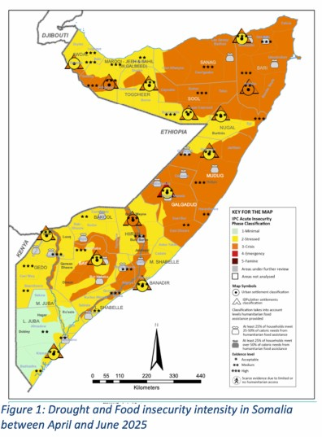
Somalia is considered a Least Developed Country (LDC), with low GNI per Capita (USD 573), Human Assets Index (31.8 driven by high under 5 infant mortality - 106 per 1000 births), and low adult literacy (41%)1 . About 55% of Somalia's 19.6 million people live in rural areas, while there are 2.6 million internally displaced persons (IDPs) across the country. The GDP of Somalia is estimated at 10.97 billion USD, and the country has a low Economic Vulnerability Index (54.4%). This reflects the fact that 65% of Somalia's population depend on traditional subsistence farming with livestock and crops, which contributes 75 percent to the GDP and accounts for 93 percent of the nation's total exports. This significant export figure is due to a robust livestock trade, with Somalia having one of the largest livestock populations in Africa (over 50 million heads).
The socio-political history of post-independence Somalia has been characterized by continuing conflict, which culminated in the collapse of the federal government in 1991. Consequently, Somalia is ranked among the least developed countries in the world, with a significant majority of the population (67%) living in poverty. Climate change and conflict in Somalia have an intricate relationship, although direct causation is yet to be fully established. Climate change worsens existing environmental stresses, such as drought and resource scarcity, which contribute to socioeconomic vulnerabilities. This intensifies competition for resources, resulting in heightened tensions and conflict among communities. Furthermore, extremist groups such as Al-Shabaab persist in destabilizing regions, particularly in southern Somalia, weakening governance, eroding public trust, and disrupting essential services. These have resulted in displacement, livelihood disruptions, and damage to critical infrastructure causing financial loss, food insecurity, and restricted access to vital services.
Additionally, the harsh and changing climate has led to mass displacement within Somalia, causing traditional livelihoods based on agriculture and pastoralism to become unviable for many.
Somalia experiences some of the highest levels of gender inequality globally, with a Gender Inequality Index of 0.776, ranking fourth in the world (UNDP, 2012). This extreme disparity is also reflected in high rates of gender-based violence (GBV), female genital mutilation, child marriage, very low female literacy rates at just 28%. Women remain largely excluded from political and decision-making spaces, holding only 20% of parliamentary seats. This underrepresentation has significant implications: without women's voices and perspectives in governance, policies fail to reflect their specific needs and priorities, particularly in sectors like climate adaptation and resilience-building.
Gender inequality deeply intersects with climate-related risks in Somalia. Women's lack of participation in climate-related institutions and their underrepresentation in the green job market severely limit their ability to influence or benefit from climate action. This is further compounded by limited access to education and professional training opportunities in the climate and environmental fields. As climate shocks such as droughts, floods, and resource scarcity continue to intensify in Somalia, they disproportionately affect women and girls, who are often the primary providers of food, water, and care within households but have the least access to resources, services, and decision-making power. Further, security and climate-induced displacement further exposes women and girls to heightened risks of gender-based violence, exploitation, and loss of livelihoods. In overcrowded displacement sites and urban areas, access to essential services-including reproductive health care, protection services, and livelihood opportunities-becomes severely constrained, escalating human security risks2.
Young Somalis are disproportionately affected by climate change, its direct impacts on livelihood opportunities, peace, security, health, and the ripple effects on almost every aspect of sustainable development. According to the Population Survey conducted in 2014, approximately 81.5% of Somalis are under the age of 353, placing Somalia among the five most youthful countries in the world. Despite the significant impacts of the climate crisis on youth and their future, they have so far been excluded from the planning and implementation of climate change discourses at the global, national, and local levels. Despite the significant impacts of the climate crisis on youth and their future, they have so far been excluded from the planning and implementation of climate change discourses at the global, national, and local levels. Thus, gender inequality and inclusion of youth, persons with disabilities and other vulnerable groups are critically important in Somalia, and any intervention that does not address these issues will not lead to just and equitable development for all, hence the importance of factoring it in this NDC.
Somalia remains one of the most climate- vulnerable countries in the world, as evidenced by its ranking of 164th out of 187 4 countries on the 2022 Notre Dame Global Adaptation Initiative (ND-GAIN) Index. With an overall score of 37.4, Somalia's position underscores the compounded risks it faces from climate change, driven by both acute vulnerability and a limited capacity to respond through adaptation mechanisms.
The ND-GAIN Index evaluates two principal dimensions: vulnerability and readiness.
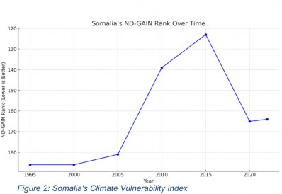
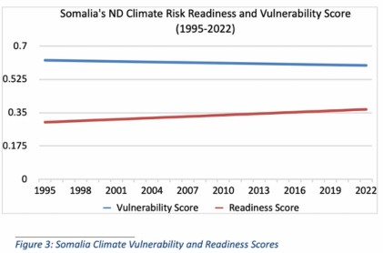
Somalia's vulnerability score of 0.606 (on a scale from 0 to 1, where higher values denote greater vulnerability) reflects systemic exposure to climate hazards such as droughts, floods, and rising temperatures. These hazards have direct consequences for the country's food security, water resources, health systems, and ecosystem services (Figure 3). Somalia's prolonged conflict and political fragility further exacerbate these stressors by weakening institutional capacities and reducing access to essential infrastructure and services.
Equally concerning is Somalia's low readiness score of 0.355, which signals a weak enabling environment for climate adaptation. This score reflects insufficient governance structures, limited economic capacity, and underdeveloped social systems, all of which constrain the country's ability to attract and deploy climate investments effectively. The combination of high vulnerability and low readiness places Somalia in the upper-left quadrant of the ND-GAIN Matrix, representing countries that are not only at great risk from climate change but are also least prepared to manage these risks.
The historical trend in ND-GAIN rankings further emphasizes Somalia's precarious position (Figure 2). Although modest gains were observed in the mid-2010s, the overall trend reveals a persistent lag in adaptive capacity. As global climate impacts intensify, Somalia's development trajectory and humanitarian outlook will increasingly be defined by its ability or inability to improve climate resilience through targeted investments, institutional reform, and international support.
Table 1: ND-GAIN by Sector (Somalia)
|
Sector |
Vulnerability Score |
|
Agriculture |
0.678 |
|
Water |
0.512 |
|
Health |
0.841 |
|
Ecosystem Services |
0.65 |
|
Human Habitat |
0.672 |
The scope of Somalia's 2025 GHG emission inventory covered emission sources outlined in the IPCC 2006 Reporting Guidelines, including emissions from energy, waste, Agriculture, Forestry, and Other Land Use (AFOLU), and Industrial Processes and Product Use (IPPU) sectors. The assessment considered four (4) primary greenhouse gases: carbon dioxide (CO2), methane (CH4), nitrous oxide (N2O), and Hydrofluorocarbons (HFCs).
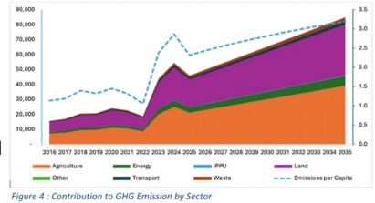
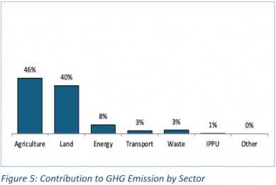
Figure 4 shows Somalia's greenhouse gas (GHG) emissions trajectory from 2016 to 2035. The current GHG emission level stands at 54.3 MtCO₂e in 2024 and will rise to 84.9 MtCO₂e by 2035 under a business-as-usual scenario. On a per capita basis, the current emission level is at 2.6 tonnes per person per year, rising to 3.2 tonnes per person per year in 2035. The rise in emissions is primarily driven by the AFOLU sector, reflecting intensifying land-use pressures such as deforestation, land degradation, and increased agricultural activity. The agriculture and Land Use, Land-Use Change and Forestry (LULUCF) sectors will remain the dominant contributors throughout this period, accounting for 46% and 40% of total emissions, respectively (Figure 5).
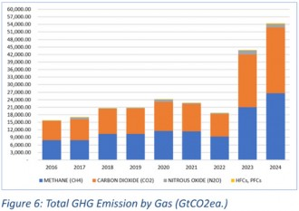
The energy and transport sectors also show notable growth, as does the waste and IPPU (Industrial Processes and Product Use) sectors, reflecting increasing vehicle use, increasing urbanization, and industrial activity. If no mitigation measures are implemented, the trajectory suggests a substantial escalation in Somalia's carbon footprint by 2035, underscoring the need for climate action and sustainable development interventions.
In terms of the constitution of emissions, Methane is the largest contributor, accounting for 49% of total emissions, followed by CO₂ at 48%, while N₂O and HFCs/PFCs together make up the remaining 3% (Figure 6). The primary drivers of GHG emissions are agriculture and land-use change, particularly CH₄ from livestock, and CO₂ from deforestation, vegetation firing, and land degradation. While the HFCs and PFCs only form a small share in the total emissions, they are associated emissions in the IPPU sector for refrigeration and Air Conditioning, Foam Blowing Agents and Fire Protection, and whose share is likely to increase with accelerated economic growth.
Somalia faces a range of climate-related security risks that intersect with existing development, governance, and humanitarian challenges. It ranks among the five countries worldwide that are most vulnerable to the effects of climate change. This vulnerability is attributed not only to Somalia's high exposure to both slow and fast-onset events, including droughts, floods and cyclones, among others, but more importantly to Somalia's low adaptive capacity and heavy reliance on rain-fed agriculture and pastoralism, both of which are highly sensitive to climate variability and change. With approximately 60% of the population relying on pastoralism and 31% engaged in crop farming, climate change poses a severe threat to the livelihoods of Somali communities.
Increasingly frequent and severe climate events such as droughts, floods, and coastal erosion have intensified competition over natural resources like water and pasture, particularly in rural and pastoral communities. These pressures can contribute to local tensions and disrupt traditional resource sharing arrangements. Climate impacts also undermine livelihoods and food systems, contributing to economic stress and displacement, thus increasing the vulnerability of affected populations. In coastal areas, sea-level rise and changing marine ecosystems are affecting fishing communities and putting coastal infrastructure at risk, with implications for maritime governance and security. Climate-induced displacement has altered mobility patterns, placing added pressure on urban areas and services, and heightening the risk of resource-related tensions. In some areas, extremist groups take advantage of these vulnerabilities to extend their influence or disrupt recovery and humanitarian efforts. These climate-related challenges exacerbate the existing state fragility, with Somalia currently ranking as one of the world's most fragile states, according to the Fragile State Index 2024.
The Somali constitution provides overarching guidance on environmental affairs, especially Article 25 ("Environment"), Article 43 ("Land"), Article 44 ("Natural Resources") and Article 45 ("Environmental Protection"). Article 25 of the Constitution states that "every Somali has the right to an environment that is not harmful to their health and well-being, and to be protected from pollution and harmful materials", while Article 45 requires residents of Somalia to "participate in the development, execution, management, conservation and protection of the natural resources and environment". Arising from the constitution, Somalia has developed various policy instruments to give effect to its provisions and specifically guide its response to climate change and its impacts. The country is also signatory to various regional and global conventions, treaties and agreements which address climate change and related matters.
The operational development plan for Somalia is the National Transformation Plan (NTP 2025-29), which aims to create a prosperous and stable Somalia, aligned to Somalia's Centennial Vision 2060. It recognizes the importance of addressing climate-related shocks by promoting climate change mitigation, adaptation and resilience initiatives for economic stability. Somalia developed the draft National Climate Change Policy in 2020, to guide efforts towards achieving the NDP-9 (now superseded by NTP 2025-29) and moving the country along low-carbon development pathways. The policy commits the country to building a climate-resilient economy by implementing appropriate climate change adaptation and mitigation measures. Given Somalia's high vulnerability to climate change, the policy prioritizes adaptation and resilience as the nation's primary focus. The Draft National Adaptation Plan 2024 outlines the country's adaptation priorities and plans to achieve these. Various sectoral laws, policies, plans and strategies support the country's climate change response, and some of the key ones are shown in the table 2 in the next page.
Various climate change treaties, conventions and agreements at regional and global levels confer responsibility for climate change actions on Somalia as a signatory party. Somalia signed the UNFCCC in 1992, and all its subsequent protocols and agreements - Kyoto and Paris. It is also signatory to the UNCBD, UNCCD, CITES, Montreal Protocol, amongst others. Somalia has recently joined the Climate Vulnerable Forum and the V20 Group of Finance Ministers (CVF-V20). As a member, Somalia will engage in efforts to transform climate vulnerability into climate prosperity, aligning with the shared vision of resilient, low-carbon development. Joining the community of 74 CVF- V20 member countries, Somalia will also contribute to advancing South-South cooperation to collectively address the climate emergency beyond its economic importance; climate-resilient agriculture emerges as a vital pathway to sustaining livelihoods, enhancing food security, promoting stability, and supporting peacebuilding efforts.
As a member of the African Union (AU), Somalia is also signatory to its framework of climate change and renewable energy policies which hinge upon the continent's blueprint for socioeconomic transformation, Agenda 2063. It comprises the Committee of African Heads of State and Government on Climate Change is (CAHOSCC),, AU Climate Change and Resilient Development Strategy and Action Plan (2022-2032); the Africa Adaptation Initiative (AAI); and the African Forest and Landscape Restoration Initiative (AFR100), amongst others. The policies aim to promote resilience, contribute to global GHG emission reduction, and accelerate low carbon growth and sustainable development among member states. Arising from these are various continental resolutions, the latest of relevance of which is "Mission 300" which aims to ensure that 300 million people in Africa gain access to clean cooking solutions by 2035.
Table 2 National Policy Documents Inventory. 11
|
National Policy Documents |
Year |
|
|
1 |
The National Transition Plan 2025-29 |
2025 |
|
2 |
The Somalia National Climate Change Policy |
2020 |
|
3 |
Draft National Adaptation Plan (NAP) Framework |
2024 |
|
4 |
Draft Environmental Social Impact Assessment Regulations |
2020 |
|
5 |
Draft National Environmental Management Bill |
2020 |
|
6 |
National Voluntary Land Degradation Neutrality Targets 2020 |
2020 |
|
7 |
National Food Security and Nutrition Policy |
2020 |
|
8 |
Somali Women's Charter |
2019 |
|
9 |
The Power Master Plan for Somalia |
2019 |
|
10 |
The National Environment Policy |
2019 |
|
11 |
Integrated Water Resources Management Strategic Plan |
2023 |
|
12 |
Somalia National Water Policy and National Water Resource Law |
2019 |
|
13 |
The National Electricity Bill |
2019 |
|
14 |
National Fertilizer Policy |
2019 |
|
15 |
Somali National Disaster Management Policy |
2018 |
|
16 |
Recovery and Resilience Framework |
2018 |
|
17 |
The Initial National Communication to UNFCCC |
2018 |
|
18 |
National Energy policy |
2018 |
|
19 |
The National Biodiversity Strategy and Action Plan |
2015 |
|
20 |
The National Adaptation Programme of Actions |
2013 |
|
21 |
UNDP Somalia Gender Equality Strategy (2023-2026) |
2023 |
|
22 |
Somali National Action Plan (NAP) for the implementation of the Somali Women's Charter and United Nations Security Council Resolution 1325 (UNSCR 1325) |
2022 |
|
23 |
The Federal Republic of Somalia updated Nationally Determined Contribution (NDC) |
2021 |
Within the East Africa region, Somalia is signatory to the Regional Convention for the Conservation of the Red Sea and the Gulf of Aden Environment; Protocol concerning Cooperation on Combating Marine Pollution in cases of Emergency in the Eastern African region; Convention for the protection, Management and Development of the Marine and Coastal Environment of the Eastern African Region (Nairobi Convention), and others. All these are consequential in guiding Somalia's response to climate change and are the framework upon which this NDC is contingent.
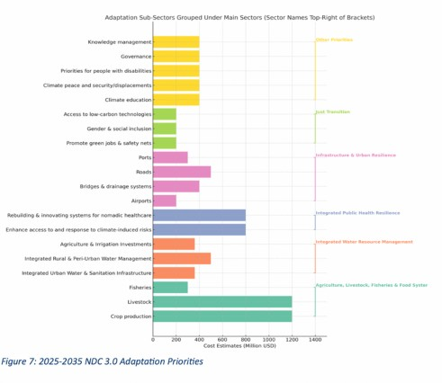
The long-term vision of Somalia's draft National Adaptation Plan (NAP) 2024 is to create a climate- resilient nation where the most vulnerable populations, sectors, and ecosystems are protected from the adverse effects of climate change. According to the Plan, by 2050, Somalia will be a country where adaptive capacity is enhanced across all levels of government and society, ensuring that economic development, food security, and public health are not compromised by climate variability. This requires integrating ecosystem-based adaptation actions in national development priorities, while addressing systemic vulnerabilities occasioned by conflict, poverty, gender dimensions, and peace-building efforts5.
Somalia's NDC 3.0 places adaptation at the core of its climate action strategy, recognizing the country's acute vulnerability to climate-induced shocks with an estimated cost of 6.330 billion from 2025 through to 2035. The prioritisation of adaptation in NDC 3.0 is not only a necessity for safeguarding livelihoods and infrastructure but also a strategic entry point for achieving broader co-benefits that support national mitigation goals (Figure 6). The national investment framework identifies key adaptation sub-sectors such as agriculture, water resource management, health, infrastructure, and social protection that are critical to enhancing climate resilience while also offering significant mitigation dividends.
The agriculture, livestock, and fisheries sector, with over USD 1.9 billion in planned investments, presents a powerful avenue for adaptation-mitigation synergy. Climate-smart agricultural practices, promotion of sustainable grazing systems, improved veterinary services, and the introduction of livestock insurance collectively strengthen food systems while reducing methane and nitrous oxide emissions. Enhancing soil health through regenerative agriculture also contributes to carbon sequestration and land restoration. Similarly, investments in integrated water resource management covering both rural and urban water systems improve access and resilience to water stress while reducing the energy footprint of water trucking and diesel-powered pumps. This shift creates opportunities to integrate solar-based and gravity-fed systems that support mitigation objectives.
Public health resilience is also a priority, with USD 800 million allocated to building climate- responsive health systems. Strengthening healthcare access in climate-vulnerable regions reduces the need for high-emission emergency responses and supports adaptive human development. Infrastructure and urban resilience investments such as in roads, ports, and drainage systems are equally transformative. These investments reduce economic disruptions from climate disasters and enable the integration of green building materials, nature-based urban solutions, and sustainable transport planning, thereby reducing emissions over time. The inclusion of just transition and social equity considerations further enhances the co-benefits of adaptation. With targeted investments in green jobs, access to low-carbon technologies, and gender-responsive safety nets, Somalia's adaptation measures also contribute to a more inclusive and decarbonized economy.
Moreover, improved systems for loss and damage tracking, adaptation finance, and climate governance are essential to anchor adaptation efforts within transparent, accountable, and data-driven frameworks. This ensures that adaptation planning is not isolated, but dynamically linked to national development and mitigation priorities. To fully harness these benefits, Somalia's NDC 3.0 integrates measurable adaptation-mitigation co-benefit indicators, prioritize ecosystem-based and nature-positive approaches, and creats cross-sectoral collaboration especially between the environment, energy, agriculture, and planning sectors. By advancing adaptation as both a climate imperative and a development opportunity, Somalia can catalyze resilience pathways that also accelerate its low-carbon transition, positioning adaptation as a driver of systemic transformation under the Paris Agreement.
The adaptation actions in agriculture are planned to increase crop and livestock productivity; enhance the sector's resilience to climate shocks; and to harness the country's potential in capture fishery. The sector is the most critical in Somalia, in terms of employment and its contribution to GDP and exports and thus has the largest share of the adaptation budget at 32% ($1.9 billion). Beyond its economic importance, climate- resilient agriculture is a vital pathway to sustaining livelihoods, enhancing food security, promoting stability, and supporting peacebuilding efforts. From a gender perspective, women in Somalia, who are disproportionally affected by climate change, due to their roles in the household food production, agriculture and energy management, face significant barriers to adaptation. These include limited access to land, credit, agricultural inputs (seeds), information about climate adaptation strategies, and practices. Addressing those challenges is critical to ensure effective and inclusive climate response.
The focus will be on sustainable conflict sensitive agricultural development, food systems resilience, and improved nutrition outcomes, with emphasis on inputs and production through a combination of climate-smart, gender-responsive actions as follows:
Enhancing land and crop productivity through promotion of climate resilient technologies; drought tolerant crop varieties and seed systems; conservation tillage; crop diversification and rotation; agroforestry systems; developing rainfed and irrigated agriculture systems (including seeds, fertilizer etc); and development of climate resilient value chains.
Sustainable livestock management systems including restoration of degraded pastures; promotion of sustainable grazing systems and fodder production; expansion of veterinary services to improve livestock health; promotion of climate resilient livestock practices; introducing livestock insurance; and improving livestock value chains.
Improving fishery productivity through promotion of marine aquaculture; strengthening governance and co- management; promotion of sustainable capture fishery practices; adaptive fishing techniques; strengthening Early Warning Systems (EWS) and surveillance; strengthening enforcement systems; establishing fish landing ports, market access and value chain development.
Integrating conflict sensitivity into climate-resilient agriculture interventions by conducting conflict risk assessments during project design and implementation; promoting inclusive and transparent stakeholder engagement, particularly in resource allocation and governance; supporting community-based mechanisms for land, water, and resource dispute resolution; leveraging traditional institutions for collaborative natural resource management; and targeting livelihood support to vulnerable and marginalized groups to enhance social cohesion and reduce conflict risks
Empower women in climate-vulnerable communities by improving access to agricultural resources, climate adaptation information, livelihood opportunities in key sectors (agriculture, livestock, fisheries), and meaningful participation in natural resource governance and peacebuilding processes.
The planned adaptation actions in water resources management will focus on availability and access to water for people and livestock; developing water for irrigation; and water governance. The required investment in the sector is estimated at $1.27 billion, which is 21% of the adaptation budget, due to its importance as an enabler in health and all other social and productive sectors. Somalia is a water scarce country, with a daily consumption of only 14 litres per person, a per capita availability of 411 m3 per year, and water access at only 52%. Given the role of water scarcity in heightening local tensions and competition over resources-particularly in drought-affected areas-investments in equitable and conflict- sensitive water management will also contribute to social cohesion, stability, and peacebuilding. Women in Somalia are disproportionately affected as they rely on water for livelihoods and household needs. They bear the burden of water collection as they trek long distances in search of water exposing them to risks of gender-based violence and time spent collecting water reduces opportunities for education, income generation, and rest. Thus, a goal of the water interventions is the integration of women's equal participation and leadership in all aspects of water governance - from rural infrastructure management to urban sanitation design - through targeted training, safe infrastructure planning, and decision-making roles in water associations and conflict resolution. The actions proposed are:
Enhancing access to water for rural and peri-urban populations and livestock through rehabilitation and development of wells, dams and boreholes; rural sanitation systems; promotion of water hygiene; water use efficiency; and water distribution enhancement.
Development and rehabilitation of urban water supply and sanitation infrastructure; sanitation systems; development of Solid Waste Management (SWM) systems; and valorisation of water supply.
Rehabilitation and development of irrigation water structures
Improved water governance and co-management; data systems, research, early warning and information systems.
Conflict-sensitive water management through measures for equitable water access for all communities; inclusive and multi-stakeholder water governance; and strengthening of traditional dispute-resolution mechanisms around shared water resources.
This sector will cost $400 million (13% of total adaptation budget) aimed at building robust proactive health systems to prevent incidence of disease; enhance capability to respond to emergencies; and increase access to essential curative services. While the health sector is significant, there are sectors that are more vulnerable to climate change impacts, like agriculture, , enabling sectors such as water and agriculture are budgeted elsewhere. Investments here will include:
Proactive health measures to reduce the incidences and impacts of disease transmission;
Enhance the health sector's capacity to respond to climate-induced risks, including disease outbreaks and heat stress;
Rebuilding and Innovating systems for provision of healthcare to nomadic communities;
Develop climate-resilient health infrastructure accessible to all, including pregnant women, people with disabilities, and rural populations and provide sexual and reproductive health services during climate emergencies;
Development of early warning and communication systems for health related risks.
A total of $1,400 billion (23%) will be directed toward improving connectivity, and climate proofing infrastructure in urban and rural areas. Communication is vital for commerce, and for responding to and reducing vulnerability to climate shocks. The activities include rehabilitation and development of critical roads, airports and ports infrastructure; construction and maintenance of bridges and drainage systems to mitigate flooding in urban areas; and for other climate-related structures. In addition, resilient infrastructure can help reduce the risk of climate-induced tensions by improving equitable access to services, reducing displacement pressures, and supporting stability in vulnerable and underserved areas.
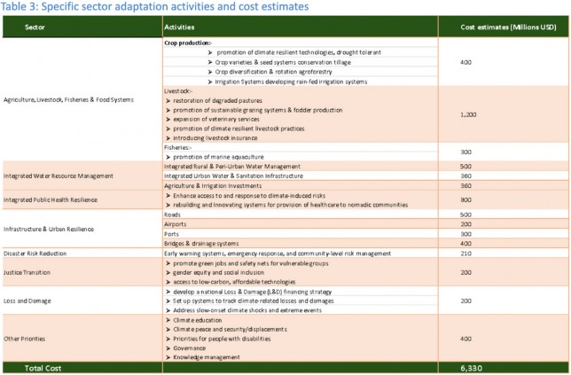
A just transition is a cornerstone of Somalia's climate and development strategy, ensuring that the shift to a low-carbon and climate-resilient future is inclusive, equitable, and socially just. Somalia's NDC 3.0 recognizes that climate change disproportionately affects vulnerable groups, including women, youth, informal workers, pastoralist communities, and internally displaced persons. To address this, the adaptation component prioritizes targeted investments in green job creation and vocational training, with a focus on reskilling young people and women for emerging climate-resilient sectors such as renewable energy, sustainable agriculture, and ecosystem restoration.
Moreover, the NDC commits to strengthening gender-responsive adaptation planning by integrating social protection measures that safeguard livelihoods and well-being in the face of climate shocks. By enhancing access to low-carbon and affordable technologies such as solar-powered irrigation, clean cooking solutions, and climate-smart digital tools the strategy aims to empower marginalized communities to participate in and benefit from the green transition. This sector also promotes inclusive governance and participatory decision- making processes, ensuring that adaptation strategies are co-developed with those most affected. Through these integrated actions, Somalia seeks to align its adaptation goals with National Transformation Plan priorities, the Sustainable Development Goals (SDGs), and its broader peacebuilding and social cohesion agenda6.
Somalia's NDC 3.0 outlines several cross-cutting priorities that act as foundational enablers for effective, inclusive, and sustainable adaptation outcomes. One of the key pillars is climate education and awareness, aimed at building a climate-informed citizenry. This includes integrating climate change into school curricula, supporting community-based education programs, and enhancing the capacity of local media and civil society to disseminate climate knowledge and early warning information. In tandem, the NDC emphasizes peace, security, and displacement-sensitive adaptation, acknowledging the complex interplay between climate impacts, conflict, and mobility. Adaptation efforts are designed to reduce fragility and support stability in displacement-prone areas, especially through localized solutions that build community resilience.
Another critical area is disability inclusion, ensuring that adaptation measures are accessible to people with disabilities and are informed by their unique needs and perspectives. This includes designing inclusive infrastructure, strengthening disability-disaggregated data, and ensuring representation in climate governance processes. Furthermore, the NDC recognizes the importance of good governance and knowledge management, committing to improved coordination mechanisms, data systems, and institutional learning frameworks. Establishing robust monitoring and evaluation (M&E) systems and investing in research, innovation, and indigenous knowledge will be crucial for tracking progress and informing adaptive management. Together, these priorities support a whole-of-society approach to adaptation that leaves no one behind and builds the foundations for long-term climate resilience in Somalia7.
Somalia's Greenhouse Gas (GHG) mitigation strategies are sector-specific intervention pathways aimed at achieving a total emission reduction of 29.5 M tCO₂e (34%) at an estimated cost of USD 5.17 billion. This will reduce the projected emissions from 84.9 MtCO2e to 55.4 MtCO2e under the NDC 3 scenario, with the peak of 57.5 MtCO2e in 2032 (Figure 7). On a per capita basis, the emission level starts at 2.6 tonnes per person per year in 2024, peaks at about 2.8 tonnes per person per year in 2030 then declines slightly to 2.7 by 2035. The mitigation strategy targets five key sectors, and capitalizes on the cost-effective Nature Based Solutions (NBS) such as Agriculture; Land Use, Land-Use Change and Forestry (LULUCF).
|
Baseline GHG Emission 2024 |
53.4 MtCO2eq |
|
BAU Emission 2035 |
85 MtCO2eq |
|
Mitigation Target 2035 |
29.5 MtCO2eq |
|
GHG Reduction (%) Relative to BAU in 2035 |
34% |
The other sectors are Energy; Transportation; and Waste Management. These sectors vary significantly in terms of their cost- efficiency and potential for large-scale emission reductions (Figure 8). The GHG mitigation plan strategically prioritizes the NBS in land and agriculture sectors for their high impact, while also addressing cleaner energy, sustainable transport, and improved waste management to ensure a holistic and climate-resilient development pathway. The details of each sector mitigation targets and actions are detailed in subsequent sections.
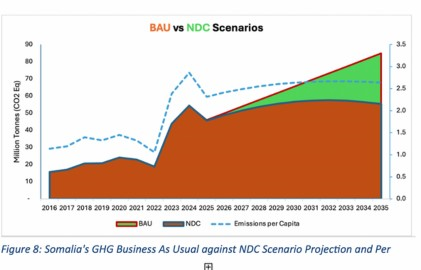
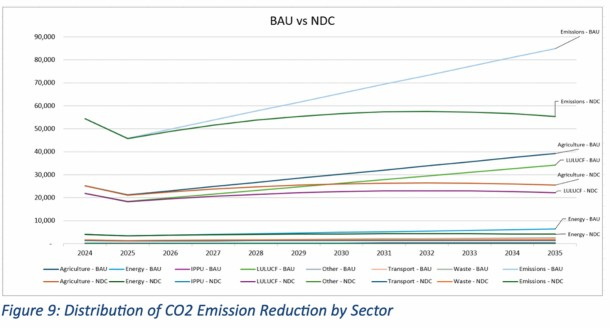
|
Baseline GHG Emission 2024 |
25.2 MtCO2e |
|
BAU Emission 2035 |
39.2 MtCO2e |
|
Mitigation Target 2035 |
4.2 MtCO2e |
|
GHG Reduction (%) Relative to BAU in 2035 |
10.70% |
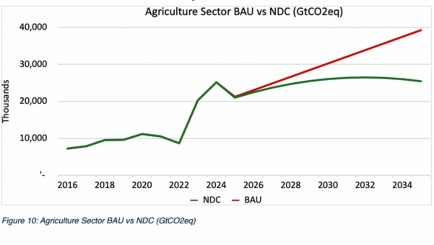
The agriculture sector contributes the highest to GHG emissions in the country, at 46% and the GHG abatement under the NDC scenario is shown above. The mitigation measures in the agriculture sector are expected to reduce emissions by 4.24 MtCO₂e, requiring approximately USD 2.174 billion-the highest investment among all sectors. This reflects the intensity and complexity of transitioning to climate-smart agriculture and improved livestock practices across dispersed rural communities. The mitigation measures include the following:
Improved livestock and manure management, fodder quality, rotational grazing, rangeland restoration, and expansion of veterinary services Promotion of Climate Smart Agriculture practices including crop rotation, drought resilient crops varieties, conservation tillage and organic fertilizers.
Scaling up agroforestry and soil conservation practices
Developing efficient irrigation systems (solar powered drip irrigation), rehabilitation of canals, and improvements in rice cultivation practices
Research (e.g. on development of seed systems, fodder technology), dissemination and technology transfer.
|
Baseline GHG Emission 2024 |
21.9 MtCO2eq |
|
BAU Emission 2035 |
34.1 MtCO2eq |
|
Mitigation Target 2035 |
19.3 MtCO2eq |
|
GHG Reduction (%) Relative to BAU in 2035 |
57% |
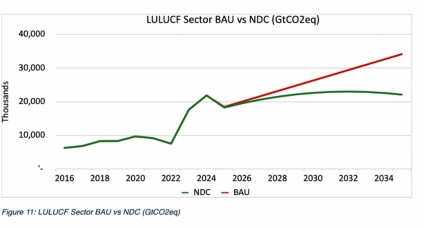
The LULUCF sector is the second highest contributor to GHG emissions, but also offers the highest potential for mitigation with a target of 19.3 MtCO₂e (65%) emission reduction. This sector will require USD 1.158 billion, making it the most cost-effective in terms of emission reduction per dollar invested. This places nature-based solutions as the cornerstone of Somalia's mitigation plan. Key mitigation actions include;
Forest conservation, reforestation, afforestation, community led tree planting, and integrating trees in croplands Sustainable land management and reduction of biomass burning
Reducing deforestation rates through conservation, landscape restoration, and enhanced regulation and enforcement Mangrove and wetland conservation and reservation
Development of supportive policy framework
Mobilization of carbon credits schemes, Payment for Ecosystem Services (PES), and REDD+
Development of national land use planning systems
|
Baseline GHG Emission 2024 |
4.1 MtCO2eq |
|
BAU Emission 2035 |
6.4 MtCO2eq |
|
Mitigation Target 2035 |
3.2 MtCO2eq |
|
GHG Reduction (%) Relative to BAU in 2035 |
50% |
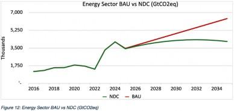
While not yet a big contributor to GHG emission, the proposed emission reduction in the sector is proportionately the highest of all sectors at 50%, aiming to cut emissions by 3.24 MtCO₂e at an estimated cost of USD 1.217 billion (Table 4). Access to sustainable and reliable energy is critical to Somalia's climate resilience and economic development as it powers sectors like agriculture, healthcare, and industry while reducing dependence on fossil fuels and enabling a just transition to renewable solutions. Energy Initiatives in this sector include:
Development of solar and wind energy systems
Promotion of improved cookstoves and energy-efficient appliances,
Sustainable charcoal production with, improved kiln technology
Promoting clean cooking including use of LPG to replace biomass in domestic energy
Small scale solar lighting solutions Solar powered irrigation systems
Increasing access to modern energy systems and enhancing energy efficiency
|
Baseline GHG Emission 2024 |
1.4 MtCO2eq |
|
BAU Emission 2035 |
2.1 MtCO2eq |
|
Mitigation Target 2035 |
1.5 MtCO2eq |
|
GHG Reduction (%) Relative to BAU in 2035 |
33% |
The transport sector's contribution to national GHG emissions is relatively low. The mitigation actions in the sector are focused on the adoption of cleaner fuels, promoting electric and energy efficient vehicles (tuk tuks), and improvements in public transport which will result in a reduction of 0.7 MtCO₂e, with an associated cost of USD 63.7 million.
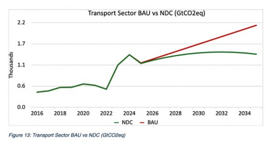
The Solid Waste Management (SWM) sector contributes minimally to GHG emission, mainly from landfill. The mitigation measures proposed here include construction of controlled landfills in urban areas; waste-to-energy programs; and recycling, especially of plastics. These are projected to reduce emissions by 160,922 tCO₂e at a cost of USD 200,000, representing the smallest share in both emissions reduction and budget allocation. This highlights the potential for low-cost, high-return interventions in urban waste management.
|
Baseline GHG Emission 2024 |
1.6 MtCO2eq |
|
BAU Emission 2035 |
2.6 MtCO2eq |
|
Mitigation Target 2035 |
0.2 MtCO2eq |
|
GHG Reduction (%) Relative to BAU in 2035 |
8% |
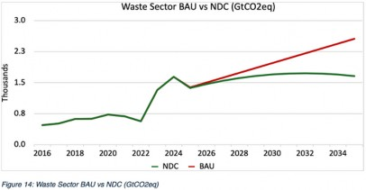
|
Baseline GHG Emission 2024 |
0.3 MtCO2eq |
|
BAU Emission 2035 |
0.4 MtCO2eq |
|
Mitigation Target 2035 |
0.1 MtCO2eq |
|
GHG Reduction (%) Relative to BAU in |
25% |
The IPPU sectors contribution in emissions under the BAU and NDC scenarios are insignificant. Proposed mitigation actions under the IPPU sector, at a cost of USD 1.6 billion include improving energy efficiency through cleaner production and integration of renewable energy; and waste to heat recovery through capture and reuse, and control importation of appliances using HFCs in line with Somalia's Energy Strategy as informed by Kigali Amendment (2016)
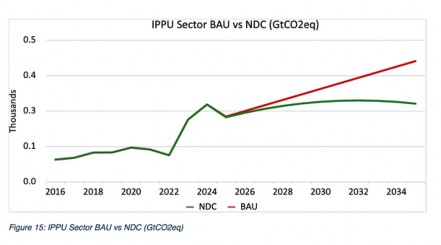
In addition to the GHG baseline that has identified Somalia sectoral based emission reduction, Somaliahas an opportunity to introduce a dedicated cooling component into its NDC 3.0, recognizing that sustainable cooling is a critical priority for both mitigation and adaptation. With rising temperatures and increasing urbanization, the demand for cooling in Somalia across public health, agriculture, and residential sectors is expected to grow significantly. However, without targeted interventions, this demand could lead to a sharp rise in greenhouse gas emissions, particularly from inefficient air conditioning and refrigerant use.
The global cooling sector currently accounts for approximately 7% of global GHG emissions and is projected to double by 2050 without action. By integrating cooling measures, Somalia will contribute to the Global Cooling Pledge adopted by 72 countries at COP28 which aims to reduce global cooling-related emissions by 68% by 2050. Somalia's NDC 3.0 includes mitigation targets focused on reducing emissions from high-GWP refrigerants (such as HFCs) through adherence to the Kigali Amendment and promoting energy-efficient cooling appliances (Sec 5.6). In parallel, adaptation goals such as infrastructure and urban resileince, and integrated public health resilience will address equitable access to cooling in vulnerable communities, particularly in schools, hospitals, and informal settlements, by promoting passive cooling design, green urban planning, and nature-based solutions.
To operationalize this, Somalia will adopt the six-step methodology recommended in the NDC Cooling Guide beginning with a national stocktake of cooling needs and emissions, defining baselines, and formulating measurable targets. MRV indicators tailored to cooling (such as appliance efficiency standards and cooling access in health and food systems) will be embedded in the NDC's transparency framework and its implementation plan. Integrating cooling measures will not only help Somalia mitigate emissions in the energy and industrial sectors but will also enhance climate resilience and support health and productivity-making it a high-impact, cross-sectoral priority for NDC 3.0 implementation.
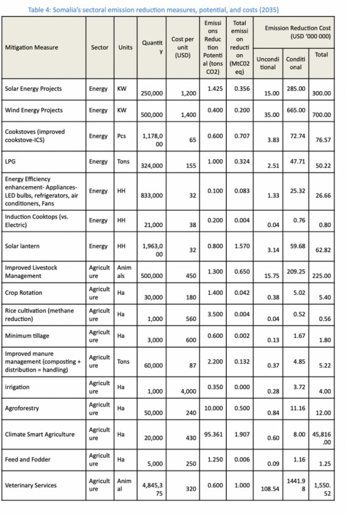
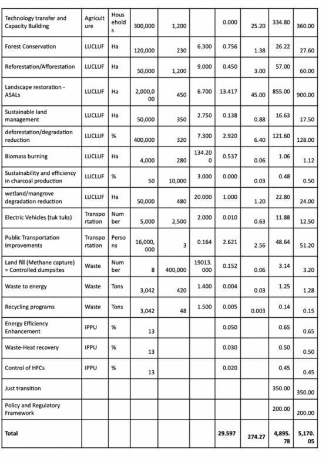
Financing and investment strategies will play a crucial role in the successful implementation of Somalia's Nationally Determined Contributions (NDC 3.0). Given the country's vulnerabilities to climate change and its urgent need for sustainable development, a well-structured financing approach is necessary to mobilize resources for mitigation and adaptation efforts. Somalia faces significant challenges in securing adequate funding due to political and economic instability, weak institutional frameworks, and limited access to international finance, with most partner support committed to humanitarian needs and relatively little to climate actions.
In March 2025, the National Climate Finance Unit (NCFU) within the Ministry of Environment and Climate Change, was formally established. It has been created to strengthen coordination and mobilization efforts around climate finance. The NCFU will serve as the central point for coordinating climate finance activities, engaging with development partners, and facilitating access to international and domestic climate finance mechanisms.
To ensure transparent implementation of climate actions, Somalia commits to integrate climate finance into national economic planning which will improve transparency in fund allocation and utilization. It is noted that Somalia lacks Direct Access Entities (DAEs) to Green Climate Fund (GCF), relying on international intermediaries, which slows funding. To overcome these systemic barriers, the Somalia government commits to:
Fast-track the finalization and validation of the Climate Finance Policy and Strategy to streamline the mobilization and disbursement of international climate finance.
Strengthen national institutions such as the MoECC to meet accreditation requirements, and to manage and disburse funds efficiently;
Build capacity of inter ministerial teams on resource mobilization from climate funding mechanisms and international partners and align national climate finance strategy to priorities of climate financing mechanisms.
Streamline coordination between ministries (MoECC, Finance, Planning, etc.) and create a centralized climate finance tracking mechanism within the Aid Information Management System (AIMS) to enhance transparency in resource flows and implementation.
Promote private sector and blended finance by incentivizing investment in renewables and develop bankable projects to attract commercial climate finance.
Leverage green bonds and innovative climate financing instruments to raise capital for renewable energy, climate-resilient agriculture, and infrastructure projects, offering returns to investors while delivering climate and development co-benefits.
Establish a Diaspora Climate Fund to mobilize remittances, philanthropic contributions, and impact investments from the Somali diaspora, targeting community-based climate adaptation and mitigation initiatives.
Integrate de-risking mechanisms into national climate finance policy, including guarantees, blended finance, and concessional lending, to attract private sector investment in high-impact but high-risk climate sectors, particularly in fragile and conflict-affected areas.
Develop a climate finance allocation and tracking module in the Somali Finance Management Information System (MIS).
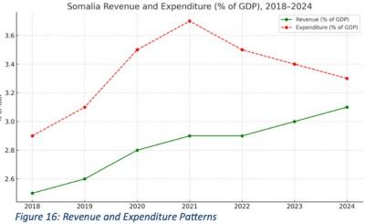
Somalia's economy is fragile, with a GDP of $10.9 billion in 2023 and 69% of the population living below the poverty line (African Development Bank, 2023). Domestic resources are primarily allocated to basic services, poverty reduction, and humanitarian needs. Foreign direct investment remains low, typically below $500 million annually (IMF, 2023), due to political instability and weak infrastructure.
Achieving the NDC 3.0 target through domestic means alone is unlikely. Access to international climate finance is crucial, including funds from the Green Climate Fund (GCF), Global Environment Facility (GEF), Adaptation Fund, and bilateral partnerships under Article 9. Participation in carbon markets under Article 6 of the Paris Agreement, with robust measurement, reporting, and verification systems, will be crucial. blended finance and strategic prioritization approach will be adopted by Somalia.
This involves breaking the US$11.50 billion mitigation and adaptation target into smaller investment pipelines focused on low-cost, community-driven solutions. A Engaging the diaspora through green diaspora bonds can fund renewable energy and environmental restoration projects.
Somalia is framing its mitigation target both as conditional (dependent on international support) and unconditional (from local resources - Table 5). Given Somalia's fragile economy and significant challenges, the country is aiming for an unconditional reduction target of 5%, approximately 4.2 MtCO2e by 2035. This target seems modest by global standards, however, considering the country's limited economic resources, infrastructural context and fragility and to balance this with environmental sustainability, this is a realistic starting point.
Somalia's financial analysis shows a sharp increase in recurrent expenditures-from 53% of total spending in 2021 to 98% in 2024-which has severely limited the government's ability to invest in development and climate- related initiatives. This highlights Somalia's continued over-reliance on external funding to meet its development priorities.
Early wins will focus on actions with co-benefits such as jobs, food security, and ecosystem services e.g. community-based renewable energy, forestry, agriculture, and clean cooking technologies which can build momentum and attract further finance.
Table 5: Conditional and unconditional mitigation share.
|
Mitigation Category |
Target (%) |
Emissions Reduced (MtCO₂e) |
Cost ('000,000 USD) |
Financing Source |
|
Unconditional |
5 |
4.2 |
274 |
Domestic/low-cost/ NGO-led |
|
Conditional |
29 |
25.3 |
4,895 |
International grants, concessional loans, green climate finance & carbon markets |
|
Total |
34 |
29.5 |
5,170 |
Blended effort |
Somalia recognizes technology transfer and capacity building as critical enablers for achieving its Nationally Determined Contribution (NDC) goals. Given Somalia's unique socio-economic circumstances - including high poverty levels (69% below poverty line), climate vulnerability, and post-conflict recovery needs - a robust approach to technology deployment is essential. The Ministry of Environment and Climate Change (MoECC) is coordinating development of a comprehensive Technology Needs Assessment (TNA) that aligns with Somalia's national development priorities while addressing urgent climate challenges.
Somalia's capacity building efforts must address both immediate climate adaptation needs and long-term sustainable development goals. The country's Technology Needs Assessment, initiated in 2020 as part of the TNA Phase IV project, provides a framework for targeted interventions across key sectors. With a whole of society and all of government approach, the capacity building will target all sectors of Somalia, including all government ministries departments and agencies; all sectors of communities including the most vulnerable; all departments of federal member states; the civic society, and other sectors.
Given Somalia's extreme vulnerability to climate shocks (including five consecutive failed rainy seasons from 2021-2023 that displaced 1.3 million people), adaptation technologies require urgent scaling:
Expanding beyond basic solar pumps to include IoT-enabled monitoring systems that track water levels, quality, and usage patterns, helping pastoralist communities manage scarce resources Community-Based Rooftop Rainwater Harvesting at scale in urban informal settlements (384 affected by 2023 floods) with training programs for women-led households
Integrated Early Warning Systems which combine mobile alert systems (reaching 54.8% mobile penetration) with traditional communication channels to warn pastoralists (70% of population) about droughts and floods
Climate-Smart Livestock Management including iintroducing mobile apps for herd tracking, veterinary services, and market linkages to support Somalia's livestock sector (60-70% of population dependent)
With only 12% renewable energy in Somalia's energy mix (42MW out of 345MW total capacity), mitigation efforts require both technological and behavioral interventions:
Decentralized Renewable Energy Hubs combining solar PV with battery storage and productive use equipment (e.g., refrigeration, irrigation) to create income-generating opportunities in rural areas Clean Cookstove Value Chains, establishing local manufacturing of efficient stoves
Urban Waste-to-Energy Systems pilot projects in major cities to address growing waste management challenges while generating energy
Establishing climate innovation centres or establishing regional hubs linked to universities to foster local solutions
Cross-Sectoral Training Programs, building technical expertise across federal and state ministries, incorporating traditional knowledge from pastoralist communities
Youth Climate Corps, engaging Somalia's large youth population in technology deployment and monitoring
Mobile-Enabled Water Kiosks, leveraging Somalia's advanced mobile money systems (used by Hormuud's 4 million customers) to pay for water services
Solar desalination units for coastal communities
Fog harvesting technology testing in mountainous regions as supplementary water source
Drought-resilient crop packages bundling improved seeds with mobile-based extension services Livestock Early Warning (EW)apps using satellite data and 5G connectivity to predict grazing conditions
Aquaponics system for urban/peri-urban areas to enhance nutrition security
Hybrid mini grids combining Somalia's 45GW wind potential and solar resources to power economic zones
Mobile-enabled energy sharing using Somalia's low mobile data prices to facilitate peer-to-peer energy trading
Solar cold storage networks to reduce post-harvest losses along livestock and agricultural value chains
5G-enabled climate monitoring for real-time environmental data collection
Blockchain for carbon finance exploring distributed ledger technology to enhance transparency in mitigation projects
AI-Powered EW, processing climate data through emerging computing infrastructure
To operationalize these enhanced interventions, Somalia will:
Strengthen policy coordination by aligning TNA outcomes with National Transition Plan and Somalia Power Master Plan through the newly established National Electricity Authority
Leverage international partnerships by deepening engagement with Climate Technology Centre and Network and NDC Partnership which supported Somalia's enhanced NDC development
Create enabling environment by finalizing regulations for emerging technologies through National Communications Authority while ensuring cyber-security
Gender-responsive implementation by ensuring 40% women participation in technology programs, building on UNDP's successful models
Private sector engagement through development of clean energy PPP frameworks with Power Africa's support to attract investment in renewable energy
Community-led deployment by adapting technologies to nomadic lifestyles through mobile service units and portable solutions.
Establish technology performance dashboards integrated with National Emergency Operations Centre
Conduct annual reviews of Technology Action Plans through multi-stakeholder forums
Link technology transfer outcomes to Somalia's NDC tracking framework and SDG reporting
Climate change exacerbates existing inequalities in Somalia, disproportionately impacting women, youth, persons with disabilities (PWDs), and indigenous communities due to structural vulnerabilities, rigid socio-cultural norms, and limited access to resources, services, and decision-making platforms. Women, in particular, face heightened climate-related risks because of entrenched gender roles, marginalisation in governance, and restricted access to critical assets and adaptation strategies. Similarly, youth remain under-engaged in economic sectors and climate action, while persons with disabilities are often excluded from climate planning and lack access to adaptive infrastructure and inclusive information.
The Somalia NDC 3.0 reaffirms the Federal Government of Somalia's (FGS) commitment to inclusive and equitable climate action, placing gender equality, youth engagement, and disability inclusion at the core of national climate policy. The Somalia National Youth Policy (SNYP) recognizes youth as a vital yet underutilized resource and calls for greater youth empowerment in climate and development processes. The FGS also acknowledges the need to integrate PWDs into climate decision-making and program design to ensure no one is left behind in the climate response.
The vision of this NDC is a just and resilient future for Somalia, where women, youth, and marginalized groups are not merely beneficiaries but actively engage in providing climate solutions -driving equitable policies, green economies, and inclusive adaptation efforts. This requires transforming women and youth from vulnerable groups into key drivers of climate innovation, policy, and grassroots action for a just, sustainable and equitable future through the following.
Achieve 30% representation of women in climate decision-making bodies, with active engagement from gender ministries in NDC governance, ensuring policies reflect diverse needs.
Meaningfully include persons with disabilities in climate planning, policy design, and NDC processes, with dedicated funding for disability-led resilience initiatives.
Strengthen youth advisory councils and intergenerational partnerships to institutionalize youth leadership in national and sub-national climate governance.
Mainstream gender and disability considerations across all climate policies, ensuring adaptation strategies address the unique vulnerabilities of women, children, the elderly, and displaced populations.
Conduct intersectional gender and disability analyses to identify gaps in finance, technology, and knowledge access, shaping targeted interventions.
Develop accessible climate communication, including braille, sign language, and multilingual formats, to ensure inclusive participation in climate action.
Expand gender-responsive climate finance and insurance mechanisms to support women farmers, pastoralists, and displaced communities in recovering from climate shocks.
Strengthen social safety nets with disability-inclusive disaster preparedness, child protection systems, and adaptive social programs to prevent harmful coping mechanisms (e.g., child labor, early marriage).
Scale up youth and women-led green enterprises in circular economies, renewable energy, and sustainable agriculture, backed by dedicated funding and skills training.
Promote accessible climate technologies and ensure marginalized groups, including persons with disabilities, benefit from low-carbon solutions and adaptive infrastructure.
Integrate climate literacy into school curricula and vocational training, emphasizing gender equity and disability inclusion.
Support community-led awareness campaigns to shift behaviors toward sustainability, with leadership from women, youth, and underrepresented voices.
Assess and address child-specific climate risks by incorporating child protection into vulnerability assessments, and ensure access to health, education, and nutrition during climate shocks.
Strengthen climate-responsive social protection and safeguard services, including cash transfers, safe schools, and child-focused disaster preparedness to prevent harmful coping mechanisms like child labor and early marriage.
Promote child participation and awareness by supporting climate education in schools and engaging children and youth in climate action and decision-making processes.
A critical aspect of Somalia's' transition to clean and resilient development is the promotion of a just transition, which advances resilient environmentally sustainable economies in a way that is inclusive, by creating decent work opportunities, reducing inequality and by leaving no one behind. This involves consideration for vulnerable sectors of society. Somalia Just Transition strategy aims to shift towards sustainable development by addressing climate vulnerability, promoting inclusive economic growth and ensuring equitable resource distribution while recovering from conflict and instability.
To achieve a just transition, the following will be done:
Prioritize vulnerable groups by explicitly addressing their needs in policies and plans, and climate actions; include their voices in decision making; and actively include a focus on impacts of climate shocks and actions on vulnerable groups in all Measurement, Reporting and Verification (MRV) systems.
Emphasize all of government and whole of society approach in all climate actions, and in peace building and conflict resolution in all climate programming.
Promote the creation of green jobs, particularly in sectors affected by climate change and climate actions such as energy, agriculture, and related sectors.
Support skill development and the reskilling of affected workers and vulnerable groups to prepare them for opportunities in a green economy.
Provide social protection for workers and vulnerable groups affected by climate change and the shift to low-carbon, climate-resilient economies, with a focus on those in energy, agriculture, and other impacted sectors.
Incorporate traditional knowledge, leadership systems, and community led approaches in planning for climate actions.
Ensure availability, affordability, and resilience of sustainable, low-carbon alternative technologies to improve accessibility for vulnerable groups, while promoting an enabling environment for sustainable enterprises that can leverage these technologies.
Actively support small and medium scale businesses to drive dissemination and adoption of clean energy, and other low carbon technologies.
Promote social dialogue to inform the design and implementation of climate and just transition policies and programmes.
Somalia is one of the most vulnerable countries to climate shocks, and loss and damage is critical in all climate programming in the country. Somalia has emerged from six failed rainy seasons since 2000, which killed millions of livestock, decimated crops, and displaced millions, leading to food insecurity for over 8 million people. The direct climate attributable losses from floods and drought from 2000 - 2021 are estimated at 3.3% of GDP9.
To effectively address the escalating impacts of climate-induced Loss and Damage (L&D) in Somalia, the following strategic actions are proposed to strengthen institutional frameworks, financing mechanisms, and community resilience.
To effectively address the escalating impacts of climate-induced Loss and Damage (L&D) in Somalia, the following strategic actions are proposed to strengthen institutional frameworks, financing mechanisms, and community resilience.
Establish structures and systems for reporting, cataloguing, and quantifying climate attributable direct and indirect losses and damages from all economic sectors and communities and integrate L&D assements in MRV systems.
Develop a national L&D financing strategy, a dedicated L&D Fund, and mobilize funds from climate finance sources and international partners for the fund.
Lobby for simplified mechanisms to access funds for climate action under L&D.
Build capacity for resource mobilization and utilization and enhance transparency in the disbursement of L&D funds.
Address slow onset climate shocks such as sea level rise and desertification, alongside extreme climate shocks in L&D considerations by integrating them into national climate policies, especially through early warning systems, land use planning, and ecosystem-based approaches
In addition to the proposed loss and damage interventions in Somalia, a comprehensive approach to addressing both sudden-onset and slow-onset climate-related impacts is important. Key investments include restoring degraded rangelands and enhancing drought-resilient livestock systems, with an allocation of USD 200 million from the adaptation budget (Table 3). These interventions aim to restore livelihoods, build pastoral resilience, and reduce vulnerability to recurrent droughts. USD 500 million is allocated to improve rural and peri-urban water supply systems, an urgent priority to address water scarcity and reduce displacement risks. These investments are vital for safeguarding vulnerable communities who depend heavily on climate-sensitive sectors such as agriculture and pastoralism.
Somalia experiences severe climate vulnerability and protracted conflict. The country experiences frequent and intensifying droughts, floods, and extreme weather events, which strain already scarce resources such as water, pasture, and arable land. These climate shocks disproportionately affect pastoralist and agropastoralist communities, often triggering displacement, disrupting livelihoods, and exacerbating local tensions over resource access. The fragile governance environment, combined with weak institutions and inter-clan rivalries, heightens the risk that climate impacts will escalate into broader insecurity. Climate-induced displacement and competition over resources have also been linked to increased recruitment by armed groups, especially youth and in areas with limited state presence. Addressing climate, peace, and security (CPS) risks therefore requires a deliberate, coordinated, and conflict-sensitive approach to climate action.
To ensure that all climate actions-both mitigation and adaptation-contribute to peace and stability, Somalia will adopt conflict-sensitive approaches across planning, implementation, and monitoring. This involves integrating conflict risk analysis into climate policy and programming, and promoting inclusive, transparent governance of natural resource access, use, and management.
Mitigation measures such as reforestation, renewable energy deployment, and land-use change will be designed through participatory processes that avoid reinforcing existing grievances and support equitable benefit-sharing. Adaptation efforts, particularly in fragile and displacement-affected regions, will focus on strengthening climate-resilient livelihoods, reducing competition over scarce resources, and enhancing community-based early warning systems.
In all sectors, focus will be on building the capacity of local institutions, improving coordination and data at the sub-national/federal member state level, and fostering collaboration among stakeholders to enhance social cohesion and resilience. Do No Harm principles will be applied to address underlying drivers of conflict, including social exclusion, gender inequality, and clan-based divisions.
To strengthen the integration of Climate, Peace, and Security (CPS) into Somalia's climate response, the following specific actions will be undertaken:
Promote adaptation and mitigation actions that mitigate potential conflict risks (e.g., unequal resource distribution, exclusionary practices) and promote co-benefits for peace and social cohesion.
Prioritize climate finance proposals which integrate peacebuilding outcomes in climate actions, especially in conflict-affected and displacement-prone areas.
Include indicators that track CPS outcomes in Monitoring, Reporting, and Verification (MRV) systems such as reduction in resource-based conflicts, improved access to climate-sensitive livelihoods, and increased participation of marginalized groups in climate governance.
Strengthen regional cooperation on climate-security issues through existing platforms such as IGAD and the African Union, focusing on joint conflict-sensitive resource management, transboundary early warning systems, and harmonized policy responses to climate-induced displacement and migration. Support national and local institutions to mainstream CPS considerations in planning and budgeting processes, and to civil society actors and local communities to actively engage in CPS-sensitive climate governance.
This is a cross-cutting issue that impacts on all sectors and is projected to cost 210 million of the adaptation budget. It focuses on Somalia's commitment to proactively anticipate and manage risks, enhancing preparedness, and reducing vulnerabilities across sectors and communities. This will support early warning systems, emergency response, and community-level risk management to reduce the impact of floods, droughts, and other climate-related hazards.
The private sector is a vital engine for climate action in Somalia, with untapped potential to accelerate the implementation of the country's NDC 3.0. As Somalia moves toward operationalizing Article 6 of the Paris Agreement, creating an enabling environment for private sector engagement especially in carbon markets will be central to delivering mitigation outcomes, mobilizing climate finance, and enhancing low- carbon development.
Somalia's NDC 3.0 identifies priority mitigation and adaptation actions in sectors where the private sector can actively participate. These include renewable energy, climate-resilient agriculture, waste management, and reforestation and land restoration. For example, private energy developers can invest in solar mini-grids for off-grid rural communities, reducing reliance on diesel generators and generating measurable emission reductions. Similarly, agribusinesses can apply climate-resilient irrigation systems or improved livestock practices to reduce methane and nitrous oxide emissions, which can be quantified and monetized as carbon credits under Article 6.4 or through the voluntary carbon market.
The private sector can also benefit from bilateral agreements under Article 6.2, where international buyers purchase Internationally Transferred Mitigation Outcomes (ITMOs). These transactions can channel foreign investment into green businesses, enhance infrastructure, and create jobs, especially if aligned with co-benefits like clean energy access, gender inclusion, and job creation.
However, to unlock this potential, Somalia must establish a clear Article 6 governance framework, including:
A Designated National Authority (DNA) to approve projects and authorize ITMOs Transparent MRV systems
A national carbon registry to track credits
Moreover, the government can do engagement by offering policy incentives such as tax exemptions for green technologies, fast-track licensing for climate-aligned investments, and inclusion of private actors in national climate finance dialogues. Business associations, local entrepreneurs, and diaspora investors can be mobilized to co-develop projects that generate both climate and economic returns.
In summary, Somalia's NDC 3.0 presents a new frontier for climate-compatible private investment. By building trust, streamlining procedures, and creating credible carbon finance pathways, the private sector can become a central partner in delivering a resilient, low-emission future for Somalia.
To effectively implement this NDC, Somalia has established a clear and inclusive coordination model that ensures coherence across government institutions and active participation from society at large. This model is rooted in strong political leadership, led by the Cabinet, and operationalized through the Ministry of Environment and Climate Change (MoECC), which serves as the national coordinating authority for climate action.
At the top of the structure, the Cabinet provides high-level political leadership and ensures that climate priorities are aligned with national development objectives. This political anchoring is critical for embedding climate commitments into broader government policies and securing buy-in across sectors.
The MoECC acts as the central coordinating ministry responsible for leading NDC implementation, monitoring, reporting, and verification (MRV), and ensuring consistency with international obligations under the Paris Agreement. The Ministry facilitates cross-sectoral collaboration and ensures the integration of mitigation and adaptation measures into national planning.
Supporting this effort is the Whole-of-Government Mechanism, which operates through the Inter-Ministerial NDC Taskforce. This taskforce includes representatives from all key line ministries both at the federal and federal member state levels as well as national commissions such as the Somali Disaster Management Agency (SoDMA). This mechanism fosters coordination, avoids duplication, and ensures that each sector plays its part in delivering on NDC targets.
On the other side, the Whole-of-Society Engagement pillar brings together non-state actors who are vital for inclusive climate action. This includes civil society organizations, academia, research institutions, the private sector, and marginalized groups including PWD, youth and women. Development partners and UN agencies also participate under this pillar, providing technical and financial support while promoting policy dialogue and capacity development.
The operational arm of this implementation model is the NDC Technical Working Group, comprising specialized units and experts. These include the MRV and GHG Inventory Unit, the National Designated Authority (NDA), and National Transformation Plan (NTP) secretariat, the Climate Finance Unit, and sectorial mitigation and adaptation experts. This group translates policy direction into technical outputs, ensures data accuracy, and supports access to climate finance mechanisms such as the GCF.
All these components are interconnected. The government mechanism and society engagement pillars interact regularly with the technical working group, ensuring that both policy and practice are evidence-based and inclusive. Through this integrated and participatory model, Somalia's NDC 3.0 implementation is set on a strong foundation for coordinated, transparent, and accountable climate action.
A critical enabler to effective implementation of sectoral climate actions is an enabling policy and regulatory framework. Whereas the policy states the aspirations with respect to specific sectors, the regulatory framework provides mechanism for operationalization of the aspiration. Thus, a policy framework consisting of policies, strategy laws and regulations and plans must be put in place to enable effective implementation of climate action. The policy framework must align to the critical instruments including the constitution, sectoral laws and regulations and economic planning instruments such as the recently adopted NTP. It is critical that an assessment is made of theses frameworks and enabling instruments developed to address gaps and other identified requirements in the framework. A budget of USD 200 million has been allocated for the development of policy and regulatory frameworks under this NDC (see Table 4)
The Biennial Update Report (BUR), submitted by non-Annex I parties to the UNFCCC represents a significant step forward in the operationalization of an MRV system. Somalia's first BUR proposes an MRV system with five components: MRV of emissions, MRV of mitigation actions, MRV of adaptations, MRV of support systems, and MRV of NTP and SDG as shown in the diagram below. The MRV of emissions involves systematic tracking of GHG emissions to establish baselines and identify trends to inform policy making. It is based on IPCC 2006 Reporting Guidelines, including, under this NDC, emissions from energy, industrial processes and product use (IPPU), waste, agriculture, forestry and other land use (AFOLU) sectors. Somalia first GHG emission inventory of 2025 will form the basis for monitoring future GHG emission trends. The country will comply with its climate reporting commitments under the UNFCCC and the Paris Agreement through submission of subsequent Biennial Technical Reports (BTRs) and National Communications (NCs) as required of its LDC status.
MRV of adaptation actions ensures that the nation can manage and mitigate climate risks effectively, refine the efficacy of their adaptation measures, and ensure accountability. An important aspect for Somalia, in this regard, is monitoring the impacts of adaptation actions on marginalised and vulnerable sectors of the communities, due to the high gender and youth inequalities in climate justice. The Paris Agreement Articles 7.1 and 7.9 requires monitoring of adaptation actions through a "global stocktake" 10, and at the national levels. To achieve this, Somalia is developing an online centralized hub for data collection and analysis, to facilitate tracking of adaptation progress across the country. The country has also established the MoECC as a coordinating framework for M&E of climate actions. It is also developing a regulatory instrument that compels all federal institutions, federal member states, and non-state actors to provide annual reports on their adaptation activities.
To track financial support from partners, Somalia launched the Aid Information Management System (AIMS) in 2019. This platform functions as a comprehensive repository of external financial support information and provides MRV of climate support to Somalia. AIMS11enables a more coordinated approach among donors, facilitates the strategic planning and allocation of resources by the Somali government, and promotes transparency by making information accessible to the public.
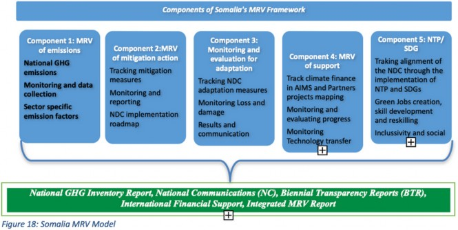
Annex 1: Information to Facilitate Clarity, Transparency and Understanding (ICTU)
|
1. Quantified information on the reference point |
|||||||||||
|
(a) Reference year(s), base year(s), reference period(s) or other starting point(s); |
The base year is 2024 for GHG emissions of carbon dioxide (CO2), methane (CH4) nitrous oxide (N2O) and hydrofluorocarbons (HFCs) |
||||||||||
|
(b) Quantifiable information on the reference indicators, their values in the reference year(s), base year(s), reference period(s) or other starting point(s), and, as applicable, in the target year; |
Total emissions in base year (2024): total provisional estimate: 54.3 MtCO2eq. Current target year level (2035) estimate (BAU) conditional (29%): 29.5 MtCO2eq. Current target year level (2035) estimate (BAU) unconditional (5%): 4.2 MtCO2eq. |
||||||||||
|
(c) For strategies, plans and actions referred to in Article 4, paragraph 6, of the Paris Agreement, or policies and measures as components of nationally determined contributions where paragraph 1(b) above is not applicable, Parties to provide other relevant information; |
Not applicable |
||||||||||
|
(d) Target relative to the reference indicator, expressed numerically, for example in percentage or amount of reduction; |
As indicated in 1(b) as below
|
||||||||||
|
(e) Information on sources of data used in quantifying the reference point(s); |
Current base year and target year level estimates are based on Greenhouse Gas Inventory covering 2000-2024 from Federal Government of Somalia and secondary sources |
||||||||||
|
(f) Information on the circumstances under which the Party may update the values of the reference indicators |
Somalia revises its total net emissions and removals estimates biennially to incorporate new data, improved methods and changes to international guidelines. Further, Somalia is in the process of developing an LT-LEDS which may necessitate revision of emission reduction targets in the future. Achievement of Somalia's NDC 3.0 targets will be assessed by comparing total net GHG emissions and removals in 2035 with the target year level. |
||||||||||
|
2. Time frames and/or periods for implementation |
|||||||||||
|
(a) Time frame and/or period for implementation, including start and end date, consistent with any further relevant decision adopted by the Conference of the Parties serving as the meeting of the Parties to the Paris Agreement (CMA); |
1 January 2025 - 31 December 2035 |
||||||||||
|
(b) Whether it is a single-year or multi-year target, as applicable. |
Single-year target in 2035 |
||||||||||
|
3. Scope and coverage |
|||||||||||
|
(a) General description of the target; |
Somalia's second NDC target 5 key sectors (energy, agriculture, LULUCF, waste, and industrial processes and product use) for emissions reduction target. The target year level is at least 34% reduction in total net GHG emissions and removals in 2035 compared to the base year. |
||||||||||
|
(b) Sectors, gases, categories and pools covered by the nationally determined contribution, including, as applicable, consistent with Intergovernmental Panel on Climate Change (IPCC) guidelines; |
Sectors: Somalia's second NDC target covers the following sectors: energy, agriculture, LULUCF, waste, and industrial processes and product use. Greenhouse gases covered in targets are CO2, CH4, N2O, and HFCs. LULUCF pools covered: All LULUCF pools are included in the NDC: above ground biomass, below ground biomass, litter, deadwood soil organic carbon and stocks of harvested wood product |
||||||||||
|
(c) How the Party has taken into consideration paragraph 31(c) and (d) of decision 1/CP .21; |
Somalia includes emissions and removals from sectors and gases as stated in 3(b) and will continue to include them. |
||||||||||
|
(d) Mitigation co-benefits resulting from Parties' adaptation actions and/ or economic diversification plans, including description of specific projects, measures and initiatives of Parties' adaptation actions and/or economic diversification plans |
The main adaptation actions proposed in the NDC are in AFOLU, Energy, Water resource management, public health and infrastructure and urban resilience. The co benefits by sector are as follows: Agriculture, livestock and food systems:
Energy
Fisheries and coastal/marine environment
Water Resource Management
Public health
Infrastructure and Urban resilience
Others
|
||||||||||
|
4. Planning processes: |
|||||||||||
|
(a) Information on the planning processes that the Party undertook to prepare its nationally determined contribution and, if available, on the Party's implementation plans, including, as appropriate: |
This NDC aligns with Somalia's long-term carbon-neutral development strategies, which aims to mobilize climate finance and investment for future economic growth and development. It also aligns with the country's National Transformation Plan 2025-2029, and other development strategies, and the Sustainable Development Goals (SDGs). The NDC has been developed following a whole of society and whole of government approach, which involved consultations with all government ministries, departments and agencies and federal member states. Further consultations were held with various sectors of the communities at federal member states level, with civic society, international humanitarian organizations, representatives of partners governments, and UN agencies. This culminated in the development of a draft document, which was then validated with the same groups. The drafting process required the development of a stocktake on progress with implementation of NDC 2.0 and an GHG emission inventory. These formed the basis for development of proposed adaptation and mitigation actions. The key policy documents forming the basis of the NDC 3 are in Table 2 (National Policy Documents Inventory) and includes the National transformation Plan 2025-2029; Draft National Adaptation Plan Framework 2024; the Somalia Power Masterplan 2019; the National Biodiversity Strategy and Action Plan 2015; and the NDC 2021 - 2030. As a low GHG-emitting country (contributing 0.019% of global emissions), while being highly vulnerable to climate change, Somalia prioritizes NDCs adaptation and resilience actions. Therefore, domestic funds will be prioritized for adaptation over mitigation measures. Importantly, gender issues will be prioritized to reduce vulnerability of marginalized sections of the community to climate shocks. Furthermore, integrated approaches will be pursued that align climate action, peacebuilding, and security strategies as called for by the National Transformation Plan (2025-2029). |
||||||||||
|
i. Domestic institutional arrangements, public participation and engagement with local communities and indigenous peoples, in a gender-responsive manner; |
The Federal Government of Somalia, recognizing the importance of climate change in the economic, social, and environmental development of the country, established a full-fledged Ministry of Environment and Climate Change (MoECC) at the federal level. One of the key focuses of the Ministry is to ensure that a reviewed and updated NDC takes cognizance of the UNFCCCC's protocols and agreements that influence the NDCs of its party members and to develop an NDC implementation plan. The MoECC initiated a comprehensive review process to update its NDC in line with the UNFCCCC guidelines. The review process was designed to accomplish several key objectives, including developing performing NDC 1 stocktake, an NDC Action Plan for Priority Sectors and sub-sectors, identifying the enabling environment and barriers to implementing adaptation and mitigation actions, and assessing and mapping potential financial resources to support NDC actions. Reviewing and updating the NDC involved active participation from relevant government ministries at national and sub-national levels. Furthermore, non-state actors, academic and research institutions, the private sector, civil society organizations, vulnerable groups including women groups and youth, and development partners were actively involved. The review process was undertaken by a task force comprising senior experts and officials from various sub-sectors who have been analyzing and reviewing all relevant national and sub-national policy documents, strategic plans, and other programmatic documentation relevant to reviewing the NDC. The updated NDC also seeks to align with long-term carbon-neutral strategies, which will leverage major technological advances and attract climate finance and investment for future economic growth and development. In addition to these key objectives, the updated NDC also aims to increase the country's resilience to the impacts of climate change, which has already affected the population's livelihoods and will continue to do so in the future. It is worth noting that the updated NDC is aligned with the country's development strategy and several Sustainable Development Goals (SDGs), such as SDG 13 (Climate Action), SDG 7 (Affordable and Clean Energy), and SDG 15 (Life on Land), along with other goals that foster sustainable development. By achieving these goals, the updated NDC aims to prepare the government and people of Somalia for achieving economic and sustainable development while preserving the environment and improving access to basic social services and increasing productivity. The government of Somalia is committed to mainstreaming gender equality across its development and climate change policies and plans, including Somalia's National Transformation Plan (NTP) 2025-2029, which represents a comprehensive commitment to inclusive development, with gender equality and women's empowerment as key components of Somalia's national transformation agenda. It recognizes the critical need to actively pursue greater involvement of women, youth, people with disabilities, and other marginalized groups, which NDC 3.0 will build upon. This will be pursued by recognizing and mainstreaming the different needs and concerns of men, women, and other groups and ensuring effective and inclusive participation in planning and implementation processes to ensure that policies are gender-sensitive and include strategies for for these vulnerable groups' empowerment. This will be done by engaging with NGOs working with these groups to strengthen their capacities to mobilize, participate, and advocate for change; making deliberate efforts to tailor information packaging and communication to diverse groups to improve inclusion; providing opportunities to participate in workshops and meetings; and contributing perspectives that can influence greater inclusion and equality. Critical gender issues exist across sectors. Hence, promoting gender equality is crucial for effective climate adaptation and mitigation in Somalia. The country must be supported in undertaking comprehensive and in-depth gender analysis to inform gender integration across climate adaptation and mitigation sectors. There is a need to build the capacities of key stakeholders at all levels, including decision-makers, to mainstream gender in climate actions. |
||||||||||
|
ii. Contextual matters, including, inter alia, as appropriate: a) National circumstances, such as geography, climate, economy, sustainable development and poverty eradication. b) Best practices and experience related to preparation of the nationally determined contribution. c) Other contextual aspirations and priorities acknowledged when joining the Paris Agreement; |
Somalia, a nation strategically positioned in the Horn of Africa, exhibits a diverse and complex geographical landscape that has profoundly influenced its socio-economic and environmental conditions. With an extensive coastline along the Indian Ocean and the Gulf of Aden, Somalia occupies a land area of approximately 637,660 km², making it one of the largest countries in the region. Its topographical variations, encompassing low-lying coastal plains, interior plateaus, and mountainous highlands in the north, contribute to distinct ecological zones that shape human settlement patterns, economic activities, and environmental vulnerabilities. Despite its vast natural endowments, the country remains highly susceptible to climatic fluctuations, a factor that significantly constrains agricultural productivity, water security, and sustainable development. The country's classification as predominantly arid to semi-arid, combined with erratic precipitation patterns and prolonged the drought cycles, renders it one of the most climate-vulnerable nations globally. As evidenced by its ranking of 164th out of 187 countries in the Notre Dame Global Adaptation Initiative (ND-GAIN) Index, Somalia faces profound challenges in climate adaptation and resilience-building12 In December 2023, Somalia reached the Heavily Indebted Poor Countries (HIPC) Completion Point, securing full debt relief. This milestone is expected to reduce Somalia's debt-to-GDP ratio from 41% in 2022 to just 6%13, freeing up fiscal space for critical development and climate adaptation projects. Access to new financial resources provides Somalia with an opportunity to strengthen food security, expand renewable energy, and implement large-scale adaptation programs that can safeguard key economic sectors. Somalia's climate is dominated by hot and dry conditions, with mean annual temperatures ranging from 25°C to 35°C14. These high temperatures are compounded by erratic rainfall patterns, with annual precipitation varying from 100 mm to 600 mm15, depending on the region. Coastal areas, which experience higher humidity levels (about 60%), contrast sharply with the inland desert regions where humidity levels drop to as low as 20%. This stark variation in humidity influences agricultural and pastoral activities, with areas receiving less rainfall being more prone to desertification and droughts16 Somalia's climate has been characterized by significant variability, with distinct seasonal and spatial differences in temperature and precipitation. The country primarily experiences arid to semi-arid conditions, with vast portions classified as desert. Since 1950, average annual temperatures have increased at a rate of approximately 0.1°C to 0.3°C per decade, with a notable rise of 1.1°C observed in the decade leading up to 2010 (IPCC, 2023). This warming trend has led to more frequent and intense heat waves, exacerbating challenges for communities reliant on rain-fed agriculture and livestock. Precipitation patterns have also become increasingly erratic, with most regions receiving less than 300 mm of annual rainfall. Somalia's two primary rainy seasons, Gu (April-June) and Deyr (October-December), have shown increased variability, with shorter, more intense rainfalls interspersed with prolonged droughts. These fluctuations have undermined agricultural stability, disrupted water availability, and contributed to food insecurity and displacement. Over the past three decades, Somalia has witnessed a rapid shift in its climate, with an average temperature increase of 1.4°C since 1990, a rate faster than the global average (IPCC, 2023). The Horn of Africa, where Somalia is located, is experiencing accelerated warming compared to the broader East African region. Future projections from GIZ EAC climate studies suggest that by 2080, temperatures could rise by an additional 1.4°C to 2.6°C, further intensifying droughts, floods, and desertification, exacerbating the country's vulnerabilities Somalia's path to economic recovery and sustainable development is deeply intertwined with its response to climate change. The country faces a dual challenge: rebuilding institutions and economic foundations while addressing escalating climate shocks that threaten its primary economic sectors such as agriculture and livestock. As part of its national transformational agenda, Somalia is working to align economic growth with global climate commitments, particularly through its NDC 3. Since the establishment of the Federal Government of Somalia in 2012, the country has demonstrated resilience, outpacing many fragile and conflict-affected nations in economic growth. Between 2013 and 2020, GDP grew by an average of 2% annually, with a recovery to 3.3% in 2021. However, persistent droughts, supply chain disruptions, and worsening global economic conditions caused a slowdown in 2022, reducing GDP growth to 2.4%. Projections for 2023 and 2024 anticipate a rebound to 2.8% and 3.7%, respectively, driven by stabilizing conditions and international financial support17. Somalia's economic backbone is formed by agriculture and livestock which accounts for over 65% of GDP and employs more than 70% of the workforce, and it generates 80% of export earnings18. However, these sectors are highly vulnerable to climate variability, particularly prolonged droughts and erratic rainfall. Recurrent climate shocks have significantly impacted food security, displaced millions, and increased reliance on humanitarian assistance. The 2020-2023 drought, one of the worst in decades, led to widespread livestock losses, crop failures, and a humanitarian crisis. According to the Ministry of Health Somalia, the drought has engulfed more than 71,000 people 40% of whom were children, underscoring the urgent need for climate adaptation and resilience-building investments. A key economic challenge for Somalia is low household earnings and widespread income inequality. The country's per capita GDP remains among the lowest in the world, at approximately US$580 in 202219. Household incomes vary widely based on location, with urban households typically earning more than their rural counterparts due to better access to markets, services, and employment opportunities20. However, even in urban areas, informal employment dominates, and wages remain low21. It is estimated that more than 69% of Somalis live on less than US$2 per day22, highlighting the urgent need for economic diversification and job creation. Somalia joined the Convention in 2009 as a party not included in Annex I to the Convention. Thus, Somalia is among developing nations that are not themselves heavy carbon emitters, but which have high vulnerability index, owing to their fragile ecosystems, limited adaptation capacities, and limited capacity to initiate and execute adaptation and mitigation measures. By being a member of the UNFCCC, Somalia has ratified a number of international instruments and frameworks for GHG reduction, and protection of the Ozone Layer; including the Montreal Protocol of 1987 for controlling the production and consumption of substances listed as harmful to the Ozone Layer; the Vienna Convention of 1985 for the Protection of the Ozone Layer, for which the annual Conference of Parties (COP) have continued with monitoring of ozone layer depletion; Kyoto Protocol of 1997 for regional and global collaboration for climate action; and Paris Agreement of 2015 that aims to limit global temperature increase to 1.5°C above pre-industrial levels. In 2015, Somalia submitted its Intended Nationally Determined Contribution (INDC) in accordance with decisions 1/CP.19 and 1/CP.20 of the UNFCCCC, and after ratification of the Paris Agreement in April 2016, the INDC became Somalia's first NDC. Since ratifying the Paris Agreement, Somalia has established and implemented several significant climate change response policies at national and sub-national levels, such as the National Climate Policy and National Environment Policy. According to decision 1/CP.21 paragraph 24, which requests parties to communicate or update their NDC by 2020, Somalia reviewed and updated its NDC for submission to the UNFCCC Secretariat in 2021, outlining the goal of reducing emissions by 30% below the Business As Usual (BAU) levels by 2030, contingent on international support. The review involved active participation from relevant government ministries at national and sub-national levels, and that of non-state actors, academic and research institutions, the private sector, civil society organizations, women groups, and development partners were. The updated NDC encompasses measurable mitigation and adaptation objectives in agriculture, energy, forestry, transport, and waste sectors. However, it was not submitted to UNFCCC, and its implementation plan was also not developed, thus, the 2016 NDC is still authoritative. In 2022, Somalia's Federal Government reiterated its dedication to addressing climate change by establishing the Ministry of Environment and Climate Change (MoECC). One of the aims of the MoECC is to reinvigorate NDC actions and coordinate climate change discussions in Somalia. It has adopted a comprehensive approach, collaborating with various governmental departments, partners, and stakeholders to implement priority climate actions effectively. To effectively implement the NDC, the MoECC, in collaboration with the UNDP and FAO, has supported the collective process for the review of the existing NDC to align it with the recently developed national reports such as the "Acceleration and Localization of Environmentally Sustainable Development Goals (Green SDGs) for Somalia" and to develop the NDC implementation roadmap in 2023, which has detailed sectoral strategies, including resource allocation |
||||||||||
|
(b) Specific information applicable to Parties, including regional economic integration organizations and their member States, that have reached an agreement to act jointly under Article 4, paragraph 2, of the Paris Agreement, including the Parties that agreed to act jointly and the terms of the agreement, in accordance with Article 4, paragraphs 16- 18, of the Paris Agreement. |
Governance of the NDC Implementation Governance is at the heart of successful NDC implementation. This involves the establishment of robust institutional arrangements, clear policy directives, and inclusive processes that ensure stakeholder engagement at all levels. In its National Climate Change Policy (2020), Somalia has laid out a comprehensive governance structure that includes the Ministry of Environment and Climate Change (MoECC), Federal Member State Governments, Sectoral Ministries, the National Climate Change Committee, the Cross-Sectoral Committee on Climate Change, the Centre for Climate Change Research, and non-state actors. The MoECC, established in August 2022, is at the helm of climate policy coordination and guidance, replacing the Directorate of Environment and Climate Change. This Ministry is pivotal in setting strategies for natural resource management, budget allocation for climate change awareness, and coordination of federal and state actions. Federal member states, with their respective environmental ministries, are responsible for local environmental governance, which is crucial for the decentralized implementation of NDCs. The interplay between the MoECC and federal member states is critical. Federal member states are tasked with translating national climate policies into actionable regional strategies that are sensitive to local contexts. This decentralized approach is intended to ensure that NDC implementation is not only top-down, but also bottom-up, reflecting the specific needs of each federal member state. The Ministry of Environment and Climate Change (MoECC), federal member states, and other stakeholders must adopt a unified communication protocol to facilitate regular exchanges and create a shared digital repository for climate data and policy development. The creation of joint coordination bodies is also essential, as it provides a forum for representatives from various sectors to engage in collaborative decision-making and policy implementation. These bodies must operate with clearly defined mandates to ensure that decisions are uniformly applied across all governance levels. At the international level, Somalia is a member of the African Union (AU), it is also signatory to its framework of climate change and renewable energy policies which hinge upon the continent's blueprint for socioeconomic transformation, Agenda 2063. It comprises the Committee of African Heads of State and Government on Climate Change is (CAHOSCC), AU Climate Change and Resilient Development Strategy and Action Plan (2022-2032); the Africa Adaptation Initiative (AAI); and the African Forest and Landscape Restoration Initiative (AFR100), amongst others. The country has recently joined the Climate Vulnerable Forum and the V20 Group of Finance Ministers (CVF-V20), joining the community of 74 CVF-V20 member countries. As a member, Somalia will engage in efforts to transform climate vulnerability into climate prosperity, aligning with the shared vision of resilient, low-carbon development. Somalia joined the East Africa Community in 2024 as a full member and is also a member of the Intergovernmental Authority on Development (IGAD) at the regional level. Under these regional cooperation bodies, Somalia subscribes to their policy frameworks on climate change and related environmental and natural resources treaties, conventions and agreements. All these are consequential in guiding Somalia's response to climate change and are the framework upon which this NDC is contingent. |
||||||||||
|
(c) How the Party's preparation of its nationally determined contribution has been informed by the outcomes of the global stocktake, in accordance with Article 4, paragraph 9, of the Paris Agreement; |
The MoECC, in collaboration with the UNDP and FAO, has supported the collective process for the review of the existing NDC to align it with the recently developed national reports such as the "Acceleration and Localization of Environmentally Sustainable Development Goals (Green SDGs) for Somalia" and to develop the NDC implementation roadmap in 2023, which has detailed sectoral strategies, including resource allocation. In coordination with the NDC Partnership and financial support from UNDP, Somalia undertook a national stock take to evaluate the extent to which Somalia advanced towards the implementation of the previous NDC. The stock take assessed achievement of targets in priority sectors in the previous NDC, barriers and gaps in the NDC implementation and opportunities for increasing ambition on adaptation and mitigation in NDC 3.0 |
||||||||||
|
(d) Each Party with a nationally determined contribution under Article 4 of the Paris Agreement that consists of adaptation action and/or economic diversification plans resulting in mitigation co-benefits consistent with Article 4, paragraph 7, of the Paris Agreement to submit information on: i. How the economic and social consequences of response measures have been considered in developing the nationally determined contribution; |
One of the most pressing challenges in implementing NDC 1.0 was the lack of adequate financial resources. Somalia's estimated annual climate finance needs far exceeded the available funding, creating a gap between commitments and actual implementation. Although international mechanisms such as the Green Climate Fund (GCF) and the Global Environment Facility (GEF) provided some financial support (USD50 million), disbursements were slow and insufficient to meet the country's climate investment requirements. The total resources mobilized for implementation of NDC 1.0 was USD 300 million. Attracting private sector investment in green projects proved difficult due to Somalia's fragile economy and high investment risks. Many investors were reluctant to fund large-scale renewable energy projects or climate adaptation initiatives due to uncertainties surrounding Somalia's regulatory framework and security situation. To finance NDC 3.0 Somalia will leverage a combination of public and private financing mechanisms, international climate funds, and innovative funding models to meeting its climate commitments. The integration of climate finance into national economic planning, improved transparency in fund allocation, and fostering partnerships between the government, private sector, and international donors are key components of a robust financing strategy that will be adopted |
||||||||||
|
ii. Specific projects, measures and activities to be implemented to contribute to mitigation co-benefits, including information on adaptation plans that also yield mitigation co-benefits, which may cover, but are not limited to, key sectors, such as energy, resources, water resources, coastal resources, human settlements and urban planning, agriculture and forestry; and economic diversification actions, which may cover, but are not limited to, sectors such as manufacturing and industry, energy and mining, transport and communication, construction, tourism, real estate, agriculture and fisheries |
Somalia has established a NDC Investment and Implementation Plan with comprehensive projects, measures and activities for each of the mitigation and adaptation measures. A comprehensive assessment of the financial needs for implementing Somalia's NDC 3.0 was performed by analysing investment trends, existing financing gaps, and potential funding sources. The assessment report highlights the role of public-private partnerships, donor support, and innovative financial mechanisms in bridging these gaps. The report also explores financing strategies and mechanisms that can enhance Somalia's capacity to meet its climate commitments. The specific adaptation actions and attendant co-benefits are detailed in the Draft Somalia National Adaptation Plan Framework 2024. |
||||||||||
|
5. Assumptions and methodological approaches, including those for estimating and accounting for anthropogenic greenhouse gas emissions and, as appropriate, removals: |
|||||||||||
|
a) Assumptions and methodological approaches used for accounting for anthropogenic greenhouse gas emissions and removals corresponding to the Party's nationally determined contribution, consistent with decision 1/CP.21, paragraph 31, and accounting guidance adopted by the CMA; |
Sectors covered under the GHG inventory are as follows:
|
||||||||||
|
(b) Assumptions and methodological approaches used for accounting for the implementation of policies and measures or strategies in the nationally determined contribution; |
Not applicable. |
||||||||||
|
(c) If applicable, information on how the Party will take into account existing methods and guidance under the Convention to account for anthropogenic emissions and removals, in accordance with Article 4, paragraph 14, of the Paris Agreement, as appropriate; |
Methodologies and guidance provided by IPCC 2006 guidelines, including use of IPCC Inventory software Version 2.95 for GHG inventory More details in 5(d) |
||||||||||
|
(d) IPCC methodologies and metrics used for estimating anthropogenic greenhouse gas emissions and removals; |
Methods of estimation Somalia's accounts for emissions and removals are in accordance with methodologies and common metrics assessed by the IPCC 2006 Guidelines and adopted by the Conference of the Parties serving as the meeting of the Parties to the Paris Agreement (CMA). The metrics used for GHG emissions and removals (CO2 equivalent) are the Global Warming Potentials of a 100-year time horizon which are presented in the IPCC Fifth Assessment Report. These methods of estimation are subject to change depending on the progress of future international negotiations on estimating and accounting rules. The contributions from the LULUCF sector are accounted for based on the activity-based approach described in the 2013 Revised Supplementary Methods and Good Practice Guidance Arising from the Kyoto Protocol, with the estimated GHG emissions and removals from the LULUCF sector in accordance with the IPCC guidelines mentioned above. Somalia revises its total net emissions and removals estimates annually to incorporate new data, improved methods and changes to international guidelines |
||||||||||
|
(e) Sector-, category- or activity-specific assumptions, methodologies and approaches consistent with IPCC guidance, as appropriate, including, as applicable: i. Approach to addressing emissions and subsequent removals from natural disturbances on managed lands; |
Methodologies addressing emissions and subsequent removals from natural disturbances on managed lands are not applied |
||||||||||
|
ii. Approach used to account for emissions and removals from harvested wood products. iii. Approach used to address the effects of age-class structure in forests; |
Methodologies addressing emissions and subsequent removals from natural disturbances on managed lands are not applied |
||||||||||
|
(f) Other assumptions and methodological approaches used for understanding the nationally determined contribution and, if applicable, estimating corresponding emissions and removals, including: i. How the reference indicators, baseline(s) and/or reference level(s), including, where applicable, sector-, category- or activity-specific reference levels, are constructed, including, for example, key parameters, assumptions, definitions, methodologies, data sources and models used; |
The GHG mitigation measures and projections presented for Somalia were developed using a multi-step, participatory and data-driven methodology, combining national priorities, regional insights, and internationally accepted modelling frameworks as detailed below: The GHG mitigation plan followed a comprehensive, participatory, and evidence-based methodology. Broad stakeholder consultations were conducted involving government ministries, regional authorities, development partners, private sector actors, and civil society organizations. The engagements ensured that the identified mitigation measures were context-specific, feasible, and aligned with Somalia's development needs. Stakeholders emphasized the importance of low-cost, scalable solutions, particularly in agriculture, land use, and energy, alongside the need for capacity building and technology transfer. Their input was instrumental in prioritizing actions and validating proposed interventions. The process also included a detailed review of existing national frameworks, particularly the National Adaptation Plan (NAP), progress on the first Nationally Determined Contribution (NDC 1.0), and sector-specific policies in agriculture, forestry, energy, and transport. This review ensured alignment with national climate commitments and development priorities under Somalia'sNTP). Additionally, comparisons were made with similar countries in the region-such as Ethiopia, Kenya, and Sudan-to benchmark feasible mitigation actions based on shared ecological conditions and economic realities, thereby reinforcing the credibility and relevance of the plan. To quantify emissions and assess the impact of proposed mitigation measures, a combination of modeling tools was used. The Low Emissions Analysis Platform (LEAP) was applied for energy and emissions scenario modelling through 2035; Marginal Cost Abatement Curves (MACCs) were used to identify the most cost-effective measures to reduce emissions by ranking various abatement options based on their cost per ton of CO2e reduced, while Excel-based tools were utilized for aggregating sectoral data and estimating the costs of mitigation actions. For national GHG inventory development and future emissions projections, the IPCC 2006 software and Tier 1 emission factors were used, drawing on available national and regional activity data. This multi-tool approach provided robust, transparent estimates of Somalia's emission pathways under both business-as-usual and mitigation scenarios, supporting the formulation of realistic and measurable emission reduction targets. |
||||||||||
|
ii. For Parties with nationally determined contributions that contain non-greenhouse-gas components, information on assumptions and methodological approaches used in relation to those components, as applicable; |
Not Applicable |
||||||||||
|
iii. For climate forcers included in nationally determined contributions not covered by IPCC guidelines, information on how the climate forcers are estimated; |
Not Applicable |
||||||||||
|
iv. Further technical information, as necessary; |
Not Applicable |
||||||||||
|
(g) The intention to use voluntary cooperation under Article 6 of the Paris Agreement, if applicable |
Somalia in its Nationally Determined Contribution (NDC) submitted in 2021 expressed its intention to engage in voluntary cooperation under Article 6 of the Paris Agreement. Somalia outlined plans to utilize market-based mechanisms to achieve its climate goals. Specifically, the NDC stated that Somalia aims to "explore the use of international carbon markets under Article 6 to support the implementation of its mitigation and adaptation actions." In NDC3.0, the above statement still stands as the country will consider engaging in Article 6 mechanisms in the future to enhance its climate action and sustainable development efforts. |
||||||||||
|
6. How the Party considers that its nationally determined contribution is fair and ambitious in the light of its national circumstances: |
|||||||||||
|
(a) How the Party considers that its nationally determined contribution is fair and ambitious in the light of its national circumstances; |
Somalia, a least-developed country, faces significant challenges in accessing international development assistance, which limits its ability to finance mitigation and adaptation measures. As a result, the country's mitigation contribution takes the form of both conditional and unconditional reduction in GHG emissions relative to a business-as-usual (BAU) emissions baseline over the period 2025 to 2035. Total emission reduction target is 34%, with 29% under conditional reduction while 5% under unconditional |
||||||||||
|
(b) Fairness considerations, including reflecting on equity; |
Somalia has contributed minimally to global emissions but faces disproportionate climate impacts, including droughts, floods, and desertification. There is need for increased financial, technical, and capacity-building support from developed countries to enable Somalia's just transition and resilience-building efforts. Voluntary cooperation under Article 6 (carbon markets, non-market approaches) could provide Somalia with opportunities for fair participation in global climate action while ensuring benefits flow to local communities. |
||||||||||
|
(c) How the Party has addressed Article 4, paragraph 3, of the Paris Agreement; |
The country has a fragile economy, with 69% of the population living below the poverty line, indicating severe financial limitations (AfDB, 2023). Historical Foreign Direct Investment (FDI) in Somalia is less than $500 million annually, showing that securing billions in international finance is extremely difficult (IMF, 2023). Somalia remains committed to strengthening its climate action while acknowledging the country's unique vulnerabilities, socio-economic constraints, and adaptation needs. It aims to demonstrate progression in its mitigation efforts from 30% emission reduction in NDC 1 submitted in 2021 to 34% total emission reduction target, with 29% under conditional reduction and 5% under unconditional. Despite facing significant institutional, financial, and technical challenges, Somalia is committed to implementing robust mitigation actions across key sectors such as energy, agriculture, forestry, transport, and waste management. Enhancing governance structures, mobilizing climate finance, and strengthening capacity-building efforts will be essential in meeting these targets. |
||||||||||
|
d) How the Party has addressed Article 4, paragraph 4, of the Paris Agreement; |
Given Somalia's emerging economy, fragile context and limited emissions, the country will not adopt a full economy-wide emissions target, but will prioritize key emitting sectors such as energy, agriculture, forestry, and waste management but gradually expand its mitigation scope beyond these sectoral targets for progressive mitigation efforts. The country will develop emission tracking frameworks to improve data collection for all key sectors, supporting a transition to broader reduction goals in future NDC updates. |
||||||||||
|
(e) How the Party has addressed Article 4, paragraph 6, of the Paris Agreement |
As an LDC, Somalia will leverage flexibility provisions by tailoring its NDC commitments to available resources, institutional capacity, and socio-economic conditions. Given Somalia's high vulnerability to climate change, adaptation efforts will be central to the NDC (estimated cost of achieving emission reductions US$5.170 billion while significantly higher requirement with climate adaptation estimated at around US$6.330 billion). The country will emphasize gradual progression in its mitigation and adaptation actions, ensuring that commitments align with national development priorities To achieve these targets as outlined in NDC 3.0 Investment and Implementation Plan, Somalia will actively engage with climate finance mechanisms to secure resources for implementing its climate commitments; prioritize technical and institutional capacity-building to enhance climate governance, monitoring, and implementation; seek international support for knowledge transfer, climate data collection, and policy development to ensure effective NDC execution; and collaborate with development partners to access technology transfer and capacity-building initiatives, among others. |
||||||||||
|
7. How the nationally determined contribution contributes towards achieving the objective of the Convention as set out in its Article 2: |
|||||||||||
|
(a) How the nationally determined contribution contributes towards achieving theobjective of the Convention as set out in its Article 2; |
To achieve Article 2 of the UNFCCC and the Paris Agreement objective of stabilizing GHG emissions, Somalia commits to a 34% reduction in GHG emissions (29% conditional, 5% unconditional) relative to Business-as-Usual (BAU) by 2035, supporting the global effort to limit temperature rise. This is with a focus on mitigation co-benefits under Annex 3(d) and priority adaptation and mitigation sectors, with their respective cost estimates under the section on Financing adaptation and mitigation priorities (2025-2035). |
||||||||||
|
(b) How the nationally determined contribution contributes towards Article 2, paragraph 1(a), and Article 4, paragraph 1, of the Paris Agreement. |
Somalia's NDC 3.0 supports Article 2, Paragraph 1(a) of the Paris Agreement as stated in 7 (a), while Article 4, paragraph 1 by adopting a progressive approach to emission reductions, prioritizing key sectors such as energy, agriculture, forestry, and waste management. |
||||||||||